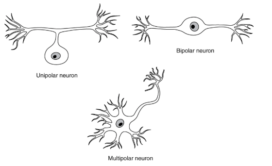
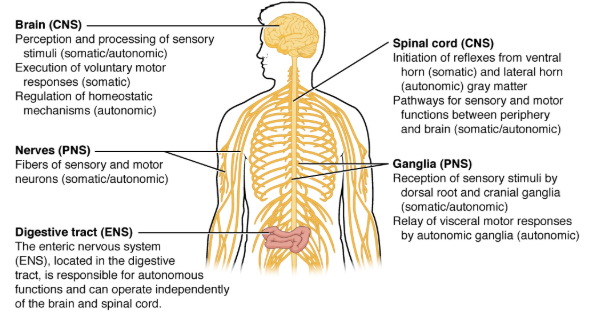
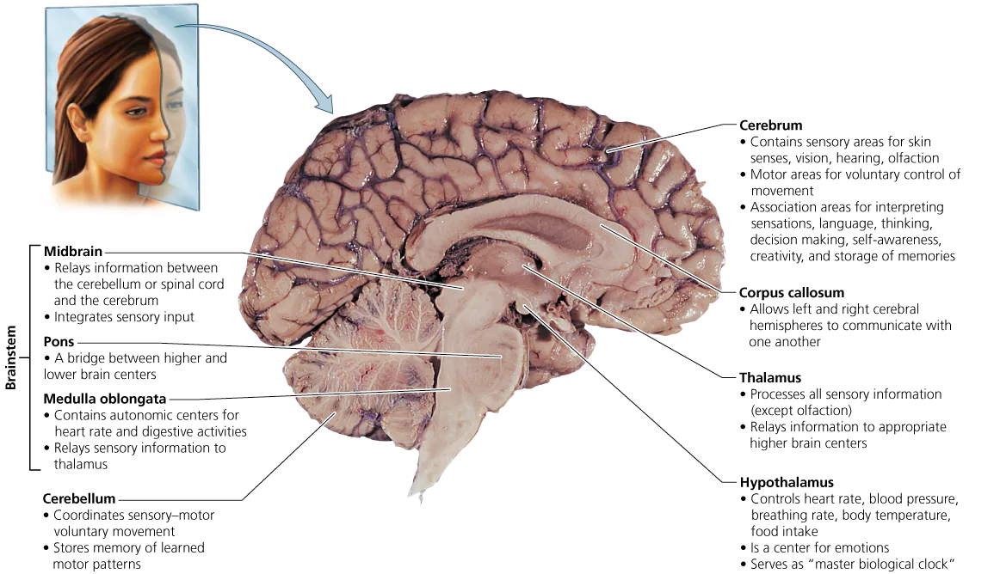
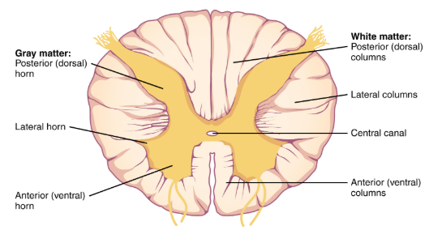
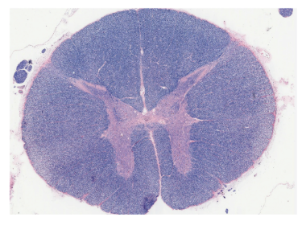
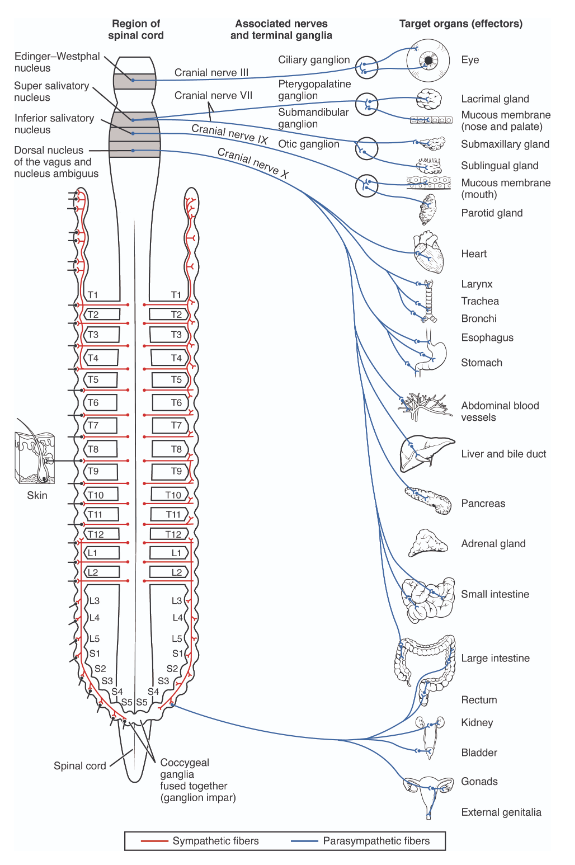

BIO 5 · Human Biology · Fall 2026 · Whalen
Week 10 — Nervous System (CNS, PNS, ANS)
Each source keeps its own tab; the last tab blends them into one account of the week.
Deadlines this week
-
Mon 10/12
Readings: Ch. 8 · Ch. 8a
read before the week's lectures -
Mon 10/12
Board work sheet
handed in at the start of lab -
Fri 10/16
11:59pm Mastering Biology DSM: CH 8
1 pt -
Fri 10/16
11:59pm WK 10 Practice Test
5 pts -
Fri 10/16
11:59pm Lab 9 document — 10 pts
Lab 9: Nervous System & Nervous Tissue · Lab 9 Quiz, 15 pts
This week's lab
- Lab 9 — Nervous System & Nervous Tissue
Monday 10/12
Coming up
- Week 11 — Sensory Systems
Oct 19–23, 2026
Chapter 8 — The Nervous System
Captured from the Pearson eText. pp. 127–142.
- 8.1 Organization of the Nervous System
- 8.2 The Central Nervous System
- 8.3 The Peripheral Nervous System
- 8.4 Disorders of the Nervous System
Did you know
- Because it takes a fastball less than half a second to travel from a pitcher's hand to the batter, and a batter's reaction time is about 0.75 second, the batter must start to swing before the ball leaves the pitcher's hand.
- Your brain cannot feel pain, because it has no pain receptors.
- You have almost 45 miles of nerves in your body.
OPENING
Chapter 7 covered the structure and function of neurons — the cells that communicate with one another and with muscles or glands. This chapter moves up a level: the organization of the nervous system and the structures responsible for its many functions, plus some disorders of the brain and spinal cord. Chapter 8a then takes psychoactive drugs. So Ch. 7 was the cell, Ch. 8 is the system. (p. 127)
The chapter as one chain
- The whole system splits twice, and the splits are the chapter's spine — first CNS vs. PNS, then the PNS into somatic (conscious, voluntary) and autonomic (unconscious, involuntary), then the autonomic into sympathetic and parasympathetic. Figure 8.1 is that tree, and almost every exam question is a question about where something sits on it.
- The CNS is fragile and therefore heavily defended — bone, three meninges, cerebrospinal fluid, and the blood–brain barrier. Each defence has a matching failure (meningitis, brain injury, drugs that cannot get in), which is how the book tests whether you know what each one does.
- The cerebrum is divided by function, and the divisions are mapped onto physical places — four lobes, three functional area types (sensory, motor, association), and two body maps along the central sulcus whose proportions follow sensitivity and dexterity rather than body size.
- Below the cerebrum, each structure has one job, and the job predicts the symptom — thalamus relays, hypothalamus keeps homeostasis, cerebellum coordinates, medulla runs the vital reflexes, pons bridges, midbrain handles simple sight/sound reflexes.
- Two systems cut across the anatomy rather than sitting in one place — the limbic system (emotion + memory + smell) and the reticular activating system (filter + alarm clock). Both are defined by function, not by location.
- The spinal cord does two things at once — carries messages up and down in white-matter tracts, and makes its own decisions via reflex arcs in the gray matter. The reflex finishes before the brain even knows.
- The autonomic branches are antagonistic, and the anatomy explains the behaviour — sympathetic ganglia form a chain, so it fires as one unit for an emergency; parasympathetic ganglia sit next to their organs, so its effects are local and independent.
- Every disorder in §8.4 is a lesion placed somewhere on that map — and the symptom tells you where. That is the chapter's payoff and the format of most of its questions.
8.1Organization of the Nervous System
pp. 128Outline
- The physical picture. Viewed apart from the body, the nervous system is a dense mass of neural tissue where the head should be, with a cord extending downward where the middle of the back should be.
- Central nervous system (CNS). The brain and spinal cord. It integrates and coordinates all voluntary and involuntary nervous functions.
- Peripheral nervous system (PNS). The nerves and ganglia located outside the CNS.
- Nerves are the communication "cables" carrying messages to and from the CNS; they branch extensively into a vast network.
- Ganglia (singular, ganglion) — small clusters of nerve cell bodies, located outside the CNS.
- The PNS keeps the CNS in continuous contact with almost every part of the body.
- The PNS subdivides by function.
- Somatic nervous system — nerves carrying information to and from the CNS, resulting in sensations and voluntary movement.
- Autonomic nervous system — governs the involuntary, subconscious activities that keep the body functioning properly.
- It has two parts that generally produce opposite effects on the muscles or glands they control.
- Sympathetic nervous system — in charge during stressful or emergency conditions.
- Parasympathetic nervous system — adjusts bodily function so that energy is conserved during nonstressful times.
- Lecture The deck splits the PNS one level finer than the chapter does, on the sensory side as well: somatic sensory (from the external environment — proprioception, sight, hearing) and visceral sensory (from the internal environment — smell and taste). The chapter never makes that split.
- The integrating example — the book's own, and a good one to keep. Meditating in the park:
- While relaxing, the parasympathetic system keeps life-sustaining activities going.
- Someone grasps your hand. Sensory receptors in the skin (somatic) respond to pressure and warmth, sending messages over sensory nerves to the spinal cord.
- Neurons within the spinal cord relay the messages to the brain.
- The brain integrates the sensory information and "decides" on an appropriate response — for example, generating messages that open your eyes.
- If the sight produces strong emotion, the sympathetic system may speed up heartbeat and breathing.
- The point: four named subdivisions all participate in one ordinary moment. "All the parts function as a coordinated whole."

Key terms
- Central nervous system (CNS)
- brain and spinal cord; integrates and coordinates all voluntary and involuntary nervous functions.
- Peripheral nervous system (PNS)
- the nerves and ganglia outside the CNS; keeps the CNS in contact with almost every part of the body.
- Ganglion (pl. ganglia)
- a small cluster of nerve cell bodies located outside the CNS.
- Somatic nervous system
- PNS division producing conscious sensation and voluntary movement.
- Autonomic nervous system
- PNS division governing involuntary, subconscious activity.
- Sympathetic nervous system
- autonomic branch in charge during stress or emergency.
- Parasympathetic nervous system
- autonomic branch that conserves energy during restful times.
Build the tree once and everything else hangs on it. Nervous system → CNS (brain, spinal cord) and PNS (nerves, ganglia); PNS → somatic and autonomic; autonomic → sympathetic and parasympathetic. End-of-chapter Q2 and Q11 are both just "where on the tree does this belong?"
Ganglion is a PNS word. A cluster of cell bodies inside the CNS is not called a ganglion. The dorsal-root ganglion (§8.3) is the chapter's worked example, and it sits outside the cord.
Sympathetic and parasympathetic are antagonistic, not sequential. The common wrong model is that parasympathetic "cleans up after" sympathetic with a delay — end-of-chapter Q5 is built to catch exactly that, and its correct answer is "none of the above."
Lecture The study guide asks for the "functional arrangement" of the system as its first objective, and the deck answers it with the finer tree above (sensory → somatic/visceral; motor → somatic/autonomic). Learn the deck's version; it contains the book's.
8.2The Central Nervous System
pp. 129–136Protection of the CNS
- Why protection matters so much here. The CNS is made of many closely packed neurons; neurons are very fragile, and most cannot divide and produce new cells. Therefore, with few exceptions, a neuron that is damaged or dies cannot be replaced.
- Four defences: bony cases (skull and vertebral column), membranes (meninges), a fluid cushion (cerebrospinal fluid), and the blood–brain barrier.
- The meninges — three connective tissue coverings, outermost to innermost:
- Dura mater — outermost; tough and leathery.
- Arachnoid — beneath the dura. Latin, "like a cobweb." Anchored to the next layer by thin, threadlike extensions resembling a spider's web.
- Pia mater — innermost; molded around the brain. "Fitting like a leotard," it dips into every indentation on the brain's surface.
- Meningitis — inflammation of the meninges.
- Must always be taken seriously: the infection can spread to the underlying nervous tissue and cause encephalitis (inflammation of the brain), which can be deadly.
- Caused by many types of bacteria and certain viruses. Bacterial → antibiotics. Viral → medicines for pain and fever while the immune system fights it.
- Freshmen in dormitories are at increased risk of bacterial meningitis, because of close living quarters. People can carry the bacteria in the throat with no symptoms and spread it by coughing, sneezing, or intimate kissing. Upperclassmen are less susceptible, perhaps from built-up immune defences. Vaccines exist against most, but not all, forms.
- Cerebrospinal fluid.
- Fills the space between layers of the meninges, the ventricles (internal cavities of the brain) and the central canal (the cavity within the spinal cord).
- Formed in the ventricles, circulates from them through the central canal, and is eventually reabsorbed into the blood.
- Three functions, as the book lists them:
- Shock absorption — like an air bag, it cushions the brain's impact with the skull during blows or head trauma.
- Support — because the brain floats in it, the brain is not crushed under its own weight.
- Nourishment and waste removal — delivers nutrients and chemical messengers, removes waste products.
- Despite all this, 7 million brain injuries occur annually in the United States.
- The blood–brain barrier.
- A mechanism that selects the substances permitted to enter the cerebrospinal fluid from the blood.
- Formed by the tight junctions between the cells of the capillary walls supplying the brain and spinal cord.
- Because those cells are held together much more tightly than capillary cells elsewhere, substances are forced to pass through the cells rather than between them. The capillary cell membranes then filter and adjust the composition of the filtrate.
- The membranes are largely lipid, so lipid-soluble substances pass easily — including oxygen and carbon dioxide, and caffeine and alcohol, which is why those two have a rapid effect on the brain.
- The cost: the barrier blocks many potentially lifesaving, infection-fighting or tumor-suppressing drugs that are not lipid soluble, "which frustrates physicians." Ch. 7's L-dopa problem is the same barrier.

The cerebrum
- Brain: the scale facts. The brain has the consistency of soft cheese, weighs less than 1600 g (3 lb), and is probably less than 3% of body weight.
- Cerebrum. The largest and most prominent part of the brain — "quite literally, your thinking cap."
- Accounts for 83% of total brain weight.
- Longitudinal fissure — the deepest indentation, running front to back; it separates the cerebrum into two hemispheres.
- Each hemisphere receives sensory information from, and directs the movements of, the opposite side of the body.
- Cerebral cortex — the thin outer layer of each hemisphere (cortex = "bark" or "rind").
- Consists of billions of neuroglial cells, nerve cell bodies, and unmyelinated axons — gray matter.
- Only about 2.5 mm (one-eighth inch) thick, but highly folded; the folds, or convolutions, triple the surface area of the cortex.
- Cerebral white matter — beneath the cortex; appears white because it is primarily myelinated axons.
- Allows brain regions to communicate with one another and with the spinal cord.
- Corpus callosum — the band of white matter that connects the two cerebral hemispheres.
- Four lobes per hemisphere: frontal, parietal, temporal, occipital.
- Assignment of a specific function to a particular cortical region is imprecise, but there are generally agreed to be three types of functional areas: sensory, motor, and association.
- Sensory areas. Awareness of sensation depends on these. The book's worked example is standing at a parade:
- Hearing → auditory area, temporal lobe.
- Vision → visual area, occipital lobe.
- Smell → olfactory area, temporal lobe.
- Taste → gustatory area, parietal lobe.
- Touch, pain, temperature and position → primary somatosensory area.
- Forms a band in the parietal lobes stretching over the cortex from ear to ear.
- Body parts are represented in the hemisphere on the opposite side of the body.
- The greater the sensitivity, the greater the area of cortex devoted to that body part. Most sensitive: tongue, hands, face, genitals. Least: e.g. the forearm.
- Motor areas.
- Primary motor area controls voluntary movement; a band in the frontal lobe, just anterior to the primary somatosensory area.
- Organized the same way: parts we have finer control over (tongue, fingers) have greater representation than regions with less dexterity (the trunk).
- Premotor cortex — just in front of the motor cortex.
- Coordinates learned motor skills that are patterned or repetitive, such as typing or playing an instrument, and the movement of several muscle groups at the same time.
- When a pattern is repeated many times, the proper pattern of stimulation is stored in the premotor cortex. The premotor cortex then stimulates the primary motor cortex in the stored pattern, without the musician thinking about finger placement.
- Association areas. Next to each primary sensory area.
- Communicate with sensory and motor areas and with other parts of the brain to analyze and act on sensory input.
- Each sensory association area communicates with the general interpretation area, which assigns meaning by integrating input from sensory association areas with stored sensory memories. The book's example: a small moving object on a dark night — if it rubs your legs and purrs, the neighbour's cat; if it turns away and raises its tail, a skunk.
- Prefrontal cortex — "the most complicated of all association areas," the most anterior part of the frontal lobe.
- Predicts the consequences of possible responses and decides which will be best.
- Enables us to reason, plan for the long term, and think about abstract concepts.
- Plays a key role in determining our personality.
![Figure 8.4 — The cerebral cortex (p. 132). (a) The four lobes, with some of the functions associated with each. (b) PET scans showing regions of increased blood flow while **hearing words, seeing words, speaking words and reading words** — compare the active regions with the language areas in part (a). **Colour = lobe in panel (a)** — yellow frontal, blue parietal, green temporal, purple occipital — and **colour = activity level in panel (b)**, cool to warm, with **no numeric scale bar printed**. Note the terminology slip: this figure calls the postcentral band "Primary **sensory** area" while the text and Figure 8.5 call it the "primary **somatosensory** area."](../weeks/week-10/sources/chapters/figures/fig-8-04.avif)
![Figure 8.5 — The primary motor and primary somatosensory regions (p. 133). Each location on their surfaces corresponds to a particular body part, and **the general arrangement is similar in the two regions** — similar, the book says, not identical. **Blue = primary motor, green = primary somatosensory**, and the colours are the only reliable way to tell the two halves apart. Two asymmetries are deliberate: **"Swallowing" appears only on the motor side and "Genitals" only on the somatosensory side.**](../weeks/week-10/sources/chapters/figures/fig-8-05.avif)
Below the cerebrum
- Thalamus.
- Often described as the gateway to the cerebral cortex, because all messages to the cerebral cortex must pass through the thalamus first.
- Functions in sensory experience, motor activity, stimulation of the cerebral cortex, and memory.
- Sensory input from every sense except smell, and from all parts of the body, is delivered to the thalamus. It sorts the information by function and relays it to appropriate cortical regions.
- At the thalamic level you have only a general impression of pleasant or unpleasant. Step on a tack and you may feel pain by the time messages reach the thalamus — but you will not know where you hurt until the message reaches the cerebral cortex.
- Hypothalamus (hypo, under). Below the thalamus, a small region.
- Largely responsible for homeostasis.
- Coordinates the activities of the nervous and endocrine systems through its influence on the pituitary gland.
- Influences blood pressure, heart rate, digestive activity, breathing rate; keeps body temperature near the set point; regulates hunger and thirst.
- Because it receives input from the cerebral cortex, it can make your heart beat faster when you merely see or think of something exciting or dangerous.
- It is part of the limbic system. Specific regions play a role in sex drive and in the perception of pain, pleasure, fear and anger.
- Cerebellum. Responsible for sensory–motor coordination.
- Acts as an automatic pilot producing smooth, well-timed voluntary movements, and controls equilibrium and posture.
- Receives sensory information about the position of joints and the degree of tension in muscles and tendons, and integrates it with input from the eyes and the equilibrium receptors in the ears.
- Two processes — comparison and prediction:
- Comparison. It continuously compares the actual position of each body part with where it ought to be and corrects. The book's test: touch your two index fingertips together above your head — you probably miss first and succeed next.
- Prediction. It calculates future positions during a movement and stops the movement at the intended point. Hence "when you scratch an itch on your cheek, your hand stops before slapping your face."
- Brain stem — medulla oblongata, pons, and midbrain.
- Medulla oblongata. "This marvelous inch of nervous tissue."
- Contains reflex centers for some of life's most vital physiological functions — the pace of the basic breathing rhythm, the force and rate of heart contraction, and blood pressure.
- Connects the spinal cord to the rest of the brain, so all sensory information going up and all motor messages going out run through it.
- Pons (= "bridge"). Connects the spinal cord and cerebellum with the cerebrum, thalamus and hypothalamus. Also has a region that assists the medulla in regulating respiration.
- Midbrain. Processes information about sights and sounds and controls simple reflex responses to these stimuli — hearing an unexpected loud sound, you reflexively turn your head and direct your eyes toward the source.
- Medulla oblongata. "This marvelous inch of nervous tissue."
- Limbic system. A collective term for a group of structures that help produce emotions and memory.
- Defined on the basis of function rather than anatomy — parts of several brain regions and the pathways connecting them.
- Our "emotional" brain: rage, pain, fear, sorrow, joy, sexual pleasure. Emotions motivate behavior that increases the chance of survival.
- Connections with the cerebrum let us have feelings about thoughts and thoughts about feelings.
- It includes the hypothalamus and is connected to lower centers such as the medulla — hence "gut" responses to emotions.
- Memory takes place in two stages:
- Short-term memory holds a small amount of information for a few seconds or minutes.
- Long-term memory stores seemingly limitless amounts for hours, days, or years.
- Not all short-term memories get consolidated into long-term memories, but when they do, the hippocampus has an essential role.
- Amygdala — has widespread connections to sensory areas and to emotion centers; it associates memories gathered through different senses and links them to emotional states.
- Olfactory bulb transmits odor information from the nose to the limbic system. So the limbic system is where emotions, memory and smell meet — which is why odors can bring back memories.
- Reticular activating system (RAS).
- An extensive network of neurons running through the medulla and projecting to the cerebral cortex.
- Function 1 — filter. The brain is flooded with about 100 million impulses each second, most trivial. The RAS filters out repetitive, familiar stimuli — street traffic, rustling paper, the pressure of clothing — while infrequent or important stimuli pass through to consciousness. Hence you can sleep with the television on but wake when someone whispers your name.
- Function 2 — activator. Unless inhibited, the RAS activates the cerebral cortex, keeping it alert and "awake."
- Consciousness occurs only while the RAS stimulates the cerebral cortex.
- When sleep centers inhibit RAS activity, we sleep. "The cerebrum 'sleeps' whenever it is not stimulated by the RAS."
- Conscious activity in the cortex can also stimulate the RAS, which stimulates the cortex — a loop. Therefore thinking about a problem may keep you awake all night.
![Figure 8.3 — A section through the brain, with functions of selected structures (p. 131). Effectively the chapter's reference table delivered as a picture. The brain itself is a photograph, so **no colour in this figure carries meaning** — all the information is in the text blocks. **Read this figure against the section text, not instead of it:** three of its boxes disagree with the prose, and all three are recorded in the conflicts below. **Caption question:** how do the left and right hemispheres communicate? — answered under Figure questions.](../weeks/week-10/sources/chapters/figures/fig-8-03.webp)

The spinal cord
- Structure. A tube of neural tissue continuous with the medulla, extending about 45 cm (17 in.) to just below the last rib.
- For most of its length about the diameter of your little finger; it thickens in two regions — just below the neck and at the end — because of the nerves serving the arms and legs.
- The central canal, filled with cerebrospinal fluid, runs its length.
- Encased in and protected by the stacked bones of the vertebral column. Pairs of spinal nerves extend from the cord through openings between the vertebrae, which are separated by disks of cartilage that act as cushions.
- Two functions:
- (1) Transmit messages to and from the brain — primarily white matter, toward the outer surface, consisting of myelinated axons grouped into tracts.
- Ascending tracts carry sensory information up to the brain.
- Descending tracts carry motor information from the brain.
- (2) Serve as a reflex center.
- A reflex is an automatic response to a stimulus, prewired in a circuit of neurons called a reflex arc.
- The reflex arc, in order: receptor → sensory neuron → usually at least one interneuron → motor neuron → effector (a muscle or a gland).
- Gray matter, in the central region of the cord, houses the interneurons and the cell bodies of motor neurons.
- (1) Transmit messages to and from the brain — primarily white matter, toward the outer surface, consisting of myelinated axons grouped into tracts.
- Spinal reflexes are essentially "decisions" made by the spinal cord, beneficial when a speedy reaction matters to safety. The withdrawal reflex is the worked example.
- Why the reflex beats the brain. Pain messages also go to the brain through ascending tracts, but it takes longer to get a message to the brain — the distance and number of synapses are greater. So by the time pain messages reach the brain, you have already withdrawn your foot.
![Figure 8.7 — The spinal cord and vertebral column (p. 135). The cord at four scales at once — in the whole body, within the vertebrae, in cross-section, and down to the internal structure of a single nerve. **Yellow is nervous tissue** throughout. Panel (c) is a **stained micrograph**: the brown of the gray matter is stain, not natural colour, but the gray/white arrangement it shows is real and is the panel's point — **white matter toward the surface, gray matter (butterfly-shaped) in the center**, the reverse of the cerebrum.](../weeks/week-10/sources/chapters/figures/fig-8-07.avif)

Key terms
- Meninges
- the three protective connective-tissue coverings of the brain and spinal cord — dura mater, arachnoid, pia mater.
- Dura mater
- outermost meninx; tough and leathery.
- Arachnoid
- middle meninx, anchored to the pia mater by web-like threads.
- Pia mater
- innermost meninx, molded onto the brain's surface.
- Meningitis
- inflammation of the meninges; can spread to cause encephalitis.
- Cerebrospinal fluid
- fluid filling the meningeal space, ventricles and central canal; shock absorption, support, nourishment and waste removal.
- Ventricles
- the internal cavities of the brain where cerebrospinal fluid forms.
- Central canal
- the cerebrospinal-fluid-filled cavity within the spinal cord.
- Blood–brain barrier
- tight junctions between brain capillary cells that select what may enter the CSF from the blood; lipid-soluble substances pass easily.
- Cerebrum
- largest part of the brain, 83% of brain weight; two hemispheres; thinking and conscious function.
- Longitudinal fissure
- the deep central groove separating the cerebral hemispheres.
- Cerebral cortex
- thin (~2.5 mm), highly folded outer layer of gray matter; convolutions triple its surface area.
- Gray matter
- neuroglia, nerve cell bodies and unmyelinated axons.
- White matter
- primarily myelinated axons; in the cerebrum it links regions, in the cord it forms tracts.
- Corpus callosum
- the band of white matter connecting the two cerebral hemispheres.
- Primary somatosensory area
- band in the parietal lobe receiving touch, pain, temperature and position; area scales with sensitivity.
- Primary motor area
- band in the frontal lobe just anterior to the somatosensory area; controls voluntary movement; area scales with dexterity.
- Premotor cortex
- just anterior to the motor cortex; stores and coordinates learned, patterned motor skills.
- General interpretation area
- assigns meaning by integrating sensory association input with stored sensory memories.
- Prefrontal cortex
- most anterior frontal lobe; predicts consequences, chooses responses, reasoning, planning, abstraction, personality.
- Thalamus
- gateway to the cortex; all sensory input except smell passes through and is sorted and relayed.
- Hypothalamus
- small region below the thalamus; homeostasis, links nervous and endocrine systems via the pituitary; part of the limbic system.
- Cerebellum
- sensory–motor coordination, equilibrium and posture; works by comparison and prediction.
- Medulla oblongata
- reflex centers for breathing rhythm, heart force and rate, and blood pressure; all traffic between cord and brain passes through.
- Pons
- "bridge" connecting spinal cord and cerebellum with cerebrum, thalamus and hypothalamus; assists the medulla with respiration.
- Midbrain
- processes sights and sounds and controls simple reflex responses to them.
- Limbic system
- functionally defined group of structures producing emotion and memory; includes hypothalamus, hippocampus, amygdala, olfactory bulb.
- Short-term memory
- holds a small amount of information for seconds to minutes.
- Long-term memory
- stores seemingly limitless information for hours, days or years.
- Hippocampus
- limbic structure essential to consolidating short-term into long-term memory.
- Amygdala
- limbic structure that links memories across senses to emotional states.
- Reticular activating system (RAS)
- network from the medulla to the cortex that filters sensory input and keeps the cortex alert; consciousness requires it.
- Spinal cord
- ~45 cm tube of neural tissue from the medulla to just below the last rib; transmits messages and serves as a reflex center.
- Reflex arc
- receptor → sensory neuron → interneuron → motor neuron → effector.
Gray vs. white is a composition fact with a location twist. Gray = cell bodies and unmyelinated axons; white = myelinated axons. In the cerebrum gray is outside (cortex) and white inside. In the spinal cord it is reversed — white toward the outer surface, gray in the central region. Getting it backwards is a standard loss, and the study guide asks for both comparisons by name.
Memorize the reflex arc in order. Receptor, sensory neuron, interneuron, motor neuron, effector. End-of-chapter Q3 is nothing but that sequence.
Each hemisphere serves the opposite side of the body. This single fact drives Q6 and the stroke discussion in §8.4 — right-side symptoms mean left-hemisphere damage.
Thalamus relays every sense except smell. Smell is the exception because the olfactory bulb runs straight into the limbic system. That exception is the most asked-about detail of the thalamus.
The medulla is the one that kills you. It holds breathing, heart rate and blood pressure, so a lesion there is fatal in a way an equal-sized cortical lesion is not — the whole content of Stop and Think #1 and of end-of-chapter Q15.
Cortical area tracks sensitivity (sensory) and dexterity (motor), not body size. Figure 8.5's distorted bodies are the point, and both the Figure 8.5 question and end-of-chapter Q4 test it.
which structure stores learned motor patterns; the section text says "the proper pattern of stimulation is stored in the premotor cortex", with the guitarist example, while Figure 8.3's cerebellum box reads "Stores memory of learned motor patterns." Both cannot be the primary store as stated. Whalen's deck sides with the text — slide 8.214 gives the premotor cortex "coordinates learned motor skills" and slides 8.219–8.220 give the cerebellum only coordination, comparison and prediction. So the text and the lecture agree against the figure; recorded rather than deleted, because the figure is still printed.
whether the midbrain or the pons is the relay; the section text gives the pons the bridging role ("connects the spinal cord and cerebellum with the cerebrum, thalamus, and hypothalamus") and gives the midbrain sight/sound processing and simple reflexes, while Figure 8.3's midbrain box reads "Relays information between the cerebellum or spinal cord and the cerebrum" and its pons box is only "A bridge between higher and lower brain centers." The deck again sides with the text — slide 8.224 gives the midbrain sights and sounds, slide 8.225 gives the pons the bridge.
whether the hypothalamus is the body's clock; Figure 8.3's hypothalamus box adds "Serves as 'master biological clock'", a function stated nowhere in the section text, the key terms, the chapter summary or the deck. One box in one figure is its only appearance in the course.
what the postcentral band is called; Figure 8.4 labels it "Primary sensory area" while the section text, the Recognizing Key Terms list, Figure 8.5 and the deck (slide 8.213) all call it the "primary somatosensory area." Same structure, two names, two pages apart — worth knowing both, since a question may use either.
8.3The Peripheral Nervous System
pp. 137–138Outline
- What the PNS is made of. The nerves and ganglia carrying information between the CNS and the rest of the body: spinal nerves and cranial nerves.
- Spinal nerves — 31 pairs.
- Each originates in the spinal cord and services a specific region of the body; one member of each pair serves the right side, the other the left.
- All spinal nerves carry both sensory and motor fibers.
- Dorsal root — sensory fibers enter the cord from the dorsal (posterior) side in this bundle. The cell bodies of these sensory neurons are located in a ganglion in the dorsal root.
- Ventral root — motor axons leave the ventral (front) side in this bundle. The cell bodies of motor neurons are located in the gray matter of the spinal cord.
- The dorsal and ventral roots join to form a single spinal nerve, which passes through the opening between the vertebrae.
- Cranial nerves — 12 pairs.
- Arise from the brain and service the structures of the head and certain body parts, including the heart and diaphragm.
- Some carry only sensory fibers, others only motor fibers, and still others both.
- Somatic nervous system.
- Carries sensory messages that tell us about the world around us and within us, and controls movement.
- Its sensory messages result in conscious sensations — light, sound, touch.
- It controls voluntary movements — "to smile, stamp a foot, sing a lullaby, or frown as we sign a check."
- Autonomic nervous system.
- It automatically adjusts the functioning of our body organs so proper internal conditions are maintained.
- The somatic nervous system sends information about conditions within the body to the autonomic nervous system, which then makes the adjustments.
- Its activities alter digestive function, open or close blood vessels to shunt blood where it is needed most, and change heart rate and breathing rate.
- Two branches:
- Sympathetic — gears the body to face an emergency or stressful situation. It prepares the body for fight or flight. Lecture The deck adds that it is the fast branch and that it leaves the CNS in the thoracic and lumbar regions.
- Parasympathetic — adjusts body function so that energy is conserved during relaxation. Lecture The deck adds that it is the slow branch. See the CONFLICT below on where it leaves the cord.
- Both send nerve fibers to most, but not all, internal organs. Where both innervate an organ, they have opposite, or antagonistic, effects: if one system stimulates, the other inhibits.
- The antagonism is chemical. Sympathetic neurons release mostly norepinephrine at their target organs; parasympathetic neurons release acetylcholine. Ch. 7 made the same pairing.
- Lecture The deck adds that both divisions use two-neuron pathways and that both help maintain homeostasis.
- Why the sympathetic system acts all at once.
- It acts as a unified whole, bringing about all its effects at once, because its neurons are connected through a chain of ganglia. "A unified response is exactly what is needed in an emergency."
- To meet a threat it increases breathing rate, heart rate and blood pressure; increases the glucose and oxygen delivered to body cells; stimulates the adrenal glands to release epinephrine and norepinephrine into the bloodstream — hormones that back up and prolong the other sympathetic effects; and inhibits digestive activity.
- Why the parasympathetic system acts organ by organ.
- Its effects occur more independently of one another; after the emergency, organ systems return to a relaxed state at their own pace.
- The reason is anatomical: the ganglia containing parasympathetic neurons are located near the individual organs — not in a chain near the spinal cord as in the sympathetic system.
![Figure 8.9 — Spinal and cranial nerves (p. 137). (a) Where spinal nerves attach to the cord — **dorsal root in, ventral root out, with the dorsal-root ganglion outside the cord**. (b) All twelve pairs of cranial nerves on the underside of the brain. **No colour distinguishes sensory from motor here** — that is carried entirely by the wording: "From…" is sensory, "To…" is motor, "From and to…" is both. **Two things to know about this figure:** it prints its cranial-nerve list **out of order** (…X, XII, XI), and it gives the nerves **only numerals and functions — none of their names**.](../weeks/week-10/sources/chapters/figures/fig-8-09.avif)
![Figure 8.10 — Structure and function of the autonomic nervous system (p. 138). Most organs are innervated by both branches, and where that dual innervation occurs the two have **opposite effects**. **A chain of ganglia links the sympathetic pathways, which therefore act as a unit; the parasympathetic ganglia each sit near the organ they service, so parasympathetic effects are more localized** — the caption states the anatomy-explains-behaviour point outright. **Pale blue field = parasympathetic, pale pink = sympathetic.** Two sympathetic entries have **no parasympathetic partner** — adrenal secretion of epinephrine and norepinephrine, and salt and water retention by the kidney — which is the figure illustrating "most, but not all, internal organs."](../weeks/week-10/sources/chapters/figures/fig-8-10.avif)
Key terms
- Spinal nerves
- 31 pairs, each originating in the cord and serving a specific body region; all carry both sensory and motor fibers.
- Dorsal root
- the bundle through which sensory fibers enter the posterior cord; its ganglion holds their cell bodies.
- Dorsal-root ganglion
- cluster of sensory neuron cell bodies in the dorsal root.
- Ventral root
- the bundle through which motor axons leave the anterior cord; their cell bodies lie in the cord's gray matter.
- Cranial nerves
- 12 pairs arising from the brain, serving the head and some lower structures including heart and diaphragm; sensory, motor, or both.
Dorsal = sensory in, ventral = motor out, and the cell bodies follow. Sensory cell bodies sit outside the cord in the dorsal-root ganglion; motor cell bodies sit inside, in the gray matter. The split location is the detail most often lost, and the study guide asks for "arrangement of ganglia" explicitly.
The two branch behaviours come from ganglion position, not from the neurotransmitters. Sympathetic ganglia form a chain near the cord → unified, all-at-once response. Parasympathetic ganglia sit near each organ → local, independent effects. Figure 8.10's caption says so explicitly.
Norepinephrine is released two ways in a sympathetic response — as a neurotransmitter at target organs, and as a hormone from the adrenal glands into the bloodstream, which is what makes the effects outlast the nerve signal. Students usually record only one.
Counts worth holding: 31 pairs of spinal nerves, 12 pairs of cranial nerves.
where the parasympathetic fibres leave the CNS; Whalen's deck gives two different answers three slides apart — slide 8.37 says "cervical and sacral regions", while slide 8.39 (the Figure 8.10 slide, reproducing the book's own figure headings) says "Cranial and sacral regions of spinal cord". The textbook does not state the regions at all. Cranial is the standard anatomy, and the figure's own wording is the one to trust, but the deck says cervical on a bullet slide — worth raising if the question is asked.
8.4Disorders of the Nervous System
pp. 139–140Outline
- The range. Disorders vary tremendously in severity — from a mild headache and insufficient sleep, to stroke, coma and spinal cord injury.
- Headaches.
- "Thinking too much cannot cause a headache. The brain has no pain receptors, so a headache is not a brain ache."
- Headaches can occur for almost any reason: stress or relaxation, hunger or eating the wrong food, too much or too little sleep.
- Tension headache — the most common type, affecting some 60% to 80% of people who suffer frequent headaches.
- In response to stress, most of us unconsciously contract the muscles of the head, face and neck.
- The pain is a dull, steady ache, often described as a tight band around the head.
- Migraine headache — usually confined to one side of the head, often centered behind one eye.
- Typically a throbbing pain that increases with each beat of the heart.
- Sometimes called a sick headache because it may cause nausea and vomiting.
- Aura — sensory symptoms just before an attack, different for different people: visual disturbances (a blind spot, zigzag lines, flashing lights), auditory hallucinations, or numbness.
- Cause not entirely understood. Some researchers believe migraines are set off by an imbalance in the brain's chemistry — specifically a low level of serotonin. "With too little serotonin, pain messages flood the brain."
- Strokes.
- A stroke, also called a cerebrovascular accident, is the death of nerve cells caused by an interruption of blood flow to a region of the brain.
- Neurons have a high demand for both oxygen and glucose, so when the blood supply is shut off, the affected neurons begin to die within minutes.
- The extent and location of impairment depend on the region of the brain involved.
- Left side of the brain affected → may lose sensation in, or the ability to move, the right side of the body, because motor nerve pathways cross from one side of the brain to the other in the lower brain.
- Because the language centers are usually in the left hemisphere, the person may also have difficulty speaking.
- Right rear of the brain damaged → the neglect syndrome: behaving as if the left side of things, even their own bodies, does not exist — combing only the hair on the right side of the head, eating only the food on the right side of the plate.
- Common causes: blood clots blocking a vessel, hemorrhage from the rupture of a blood vessel in one of the meninges, or fatty deposits that block a vessel.
- Risk factors: high blood pressure, heart disease, diabetes, smoking, obesity, and excessive alcohol intake.
- Coma.
- Although a comatose person seems to be asleep, a coma is not deep sleep. The person is totally unresponsive to all sensory input and cannot be awakened.
- Although the cerebral cortex is most directly responsible for consciousness, damage to the cerebrum is rarely the cause of coma.
- Coma is caused by trauma to neurons in regions responsible for stimulating the cerebrum — particularly those in the reticular activating system or thalamus.
- Causes include mechanical shock, tumors, infections, drug overdose, or failure of the liver or kidney.
- Spinal cord injury.
- Damage impairs sensation and motor control below the site of injury.
- The extent and location of the injury determine how long symptoms persist and the degree of permanent damage.
- Depending on which nerve tracts are damaged, injury may cause paralysis, loss of sensation, or both.
- If the cord is completely severed, there is a complete loss of sensation and voluntary movement below the level of the cut.
- Three approaches to restoring function:
- Nerve growth factors — stimulating nerve growth to reestablish connections.
- Stem cells — they retain the ability to develop into nerve cells and have restored some movement in laboratory mice.
- Electronic stimulation — a small computer, usually worn at the wrist, driving wires implanted under the skin or woven into tight-fitting clothing. This has helped some people with a spinal cord injury to walk again, and has helped others by stimulating the diaphragm.
- Looking Ahead. Ch. 8a covers psychoactive drugs — those that affect a person's mental state — which work by increasing or decreasing the effects of specific neurotransmitters and therefore affect specific regions of the brain. (p. 140)
Key terms
- Tension headache
- most common headache type (60–80% of frequent sufferers); dull steady ache from unconscious contraction of head, face and neck muscles.
- Migraine headache
- usually one-sided, often behind one eye; throbbing with the heartbeat; may cause nausea and vomiting; may be preceded by an aura.
- Aura
- sensory symptoms just before a migraine — blind spot, zigzag lines, flashing lights, auditory hallucinations, or numbness.
- Stroke (cerebrovascular accident)
- death of nerve cells from interrupted blood flow; neurons begin dying within minutes.
- Neglect syndrome
- behaving as if the left side of things, including one's own body, does not exist; follows damage to the right rear of the brain.
- Coma
- total unresponsiveness to sensory input with inability to be awakened; usually from trauma to the RAS or thalamus, not the cerebrum.
Coma is an RAS/thalamus problem, not a cortex problem. The cortex is where consciousness happens, but the cause is damage to what stimulates it. The book flags this as counterintuitive, and it is the kind of distinction a test question is built from.
Two different crossings explain stroke symptoms. Motor and sensory pathways cross in the lower brain, so symptoms appear contralateral; language is usually left-hemisphere, so speech difficulty points left as well. A right-hemisphere stroke gives the neglect syndrome instead.
Migraine ties straight back to Ch. 7: low serotonin, the same neurotransmitter the antidepressants in Ch. 7's Health Issue essay target by slowing its removal from the synapse.
The spinal cord injury rule is simply "below the site." Pair it with Applying the Concepts Q16 — a neck injury affects everything a lower-back injury does, and more.
SLIDE WEIGHT
Whalen's deck for this chapter — Ch08 AC SP20.pptx, 70 slides. Slide count per section is the best available predictor of exam weighting. There is no deck for Ch. 8a.
| Section | Slides | Share |
|---|---|---|
| 8.1 Organization of the Nervous System | 7 | 10% |
| 8.2 The Central Nervous System | 42 | 60% |
| 8.3 The Peripheral Nervous System | 12 | 17% |
| 8.4 Disorders of the Nervous System | 5 | 7% |
| Title, outline and objectives | 4 | 6% |
The deck's own objectives
Slides 69–70 — the four things Whalen says you should be able to do.
- Compare the functions of the central and peripheral, somatic and autonomic, and parasympathetic and sympathetic divisions of the nervous system.
- Identify the location and list the function of each component of the central nervous system.
- Describe the function of the somatic and autonomic nervous systems and the sympathetic and parasympathetic nervous systems.
- Explain the cause and seriousness of common health problems and injuries of the nervous system.
STUDY GUIDE — Whalen's objectives
From BIO 5 Study Guide CH 8.docx. It is one guide for Ch. 8 and Ch. 8a together — the drug objectives are on the Ch. 8a tab. His stems are dropped and the topics kept in his order.
- The functional arrangement of the nervous system.
- The functions of the CNS, the PNS, the ANS, the somatic, the sympathetic and the parasympathetic systems — six separate objectives.
- Compare and contrast sympathetic and parasympathetic, specifically: arrangement of ganglia, functions, speed of response, and examples of actions.
- The protective structures of the CNS; the structure and functions of the meninges; the structure, functions and locations of the cerebrospinal fluid; the structure and functions of the blood–brain barrier.
- The regions of the cerebrum and their functions.
- Compare and contrast gray matter and white matter.
- The location and function of the primary motor cortex, the primary somatosensory area, the association areas and the prefrontal cortex.
- The location and function of the thalamus, the hypothalamus, the cerebellum, the pons, the medulla and the midbrain.
- The limbic system, its components and functions; the reticular activating system, its components and functions.
- The arrangement of white and gray matter in the spinal cord.
- The components of a reflex arc, and the function of reflexes.
- The arrangement of peripheral nerves — cranial nerves and spinal nerves.
- Disorders of the nervous system: headaches, strokes, coma, spinal cord injury.
The guide's own disclaimer, verbatim: "This is a study GUIDE. It is to help you organize your thought processes and study materials. It is may not include every term or topic on the exam. All topics on the study guide may not be on the exam." And: "you will be responsible for material covered in the lectures and reading assignments. This information will likely be supported by information covered in labs."
"Speed of response" is on the guide and is a deck-only fact. The textbook never says the sympathetic branch is fast and the parasympathetic slow; slides 8.36 and 8.37 do. Pair it with the ganglion-arrangement answer — chain near the cord versus ganglia at the organs — which is the book's explanation for the same difference.
The cranial nerves' names are on nobody's page. The guide asks for the "arrangement of peripheral nerves… cranial nerves," and the book gives only numerals and functions — no olfactory, optic, trigeminal, vagus anywhere in the chapter or on the deck. If the lab or the lecture expects the twelve names, they come from Lab 9, not from this book. Check the Board Work tab.
The guide's term list adds nothing the chapter lacks and omits several things it asks for as objectives — corpus callosum, prefrontal cortex, reflex arc, blood–brain barrier and cerebrospinal fluid are all objectives but not terms. His term list is not a ceiling.
Stop And Think
1(p. 135) Why would a brain tumor that destroyed the functioning of nerve cells in the medulla lead to death more quickly than a tumor of the same size on the cerebral cortex?
Because the medulla holds reflex centers for functions that cannot be paused — the basic breathing rhythm, the force and rate of heart contraction, and blood pressure. Destroy those and breathing and circulation stop, which is fatal in minutes with no possibility of compensation. A cortical tumor of the same size destroys association, sensory or motor cortex, producing a deficit — loss of sensation, weakness, a language or reasoning problem — that is serious but not immediately life-threatening, and that other brain regions can sometimes partly compensate for. There is a second reason specific to the medulla's position: all sensory information going to the upper brain and all motor messages leaving the brain run through it, so damage there also cuts the single channel connecting brain to body. The principle: size of lesion matters far less than what the lesioned tissue does, and the brain stem is where the non-negotiable functions live.
2(p. 136) When a boxer is hit very hard in the jaw, his head — containing his medulla and RAS — is twisted sharply. Why might this twisting result in a knockout, in which the boxer loses consciousness?
Because consciousness is not produced by the cortex alone — it requires the reticular activating system to be actively stimulating the cortex. The chapter states this flatly: "Consciousness occurs only while the RAS stimulates the cerebral cortex," and "the cerebrum 'sleeps' whenever it is not stimulated by the RAS." A sharp rotational blow whips the head around, and because the brain is soft and sits loosely within the skull, the brain stem — where the RAS runs — is twisted and shaken. That disrupts RAS activity; with the RAS no longer driving the cortex, the cortex shuts down and the boxer is instantly unconscious, even though the cortex itself may be undamaged. This is the same mechanism §8.4 gives for coma — a knockout is, in effect, a very brief coma.
3("Consider This Case", p. 140) Daisy slipped on ice and hit the back of her head. Days later her vision was blurred and she had trouble concentrating. Look at Figure 8.4 and explain why a blow to the back of the head could cause visual problems.
Because the occipital lobe — which contains the visual area — is at the back of the head, directly under the point of impact. Figure 8.4 places "Vision" and the "Visual association area" in the occipital lobe at the posterior pole of the cerebrum. Vision is not processed at the eye; the eye only collects the signal, which travels to the occipital cortex to be interpreted. So an injury that bruises the occipital lobe degrades vision even though the eyes themselves are undamaged — which is why this blurring would not be corrected by glasses, exactly as in the Ch. 7 multiple-sclerosis case.
4("Consider This Case", continued, p. 140) An intense blow to the back of the head often damages the front of the head. How might this explain Daisy's inability to concentrate?
This is a contrecoup injury, and the chapter's own Health Issue essay supplies the mechanism: in a closed-head injury "the head suddenly changes motion, forcing the brain to follow," and because the brain is soft and jellylike and sits snugly within the skull, sudden movement causes it to ricochet within the skull — and "the inside of the skull has many ridges and sharp edges that can cut or bruise the brain," which are especially prominent behind the frontal lobes. Damage at the front means damage to the frontal lobe and specifically the prefrontal cortex, which §8.2 describes as predicting consequences, choosing among responses, and enabling us "to reason, plan for the long term, and think about abstract concepts." Impaired prefrontal function presents exactly as Daisy describes it: difficulty concentrating, planning and sustaining attention.
Figure Questions
1How do the left and right cerebral hemispheres communicate with one another? (Figure 8.3, p. 131)
Through the corpus callosum — "a very important band of white matter" connecting the two hemispheres. Being white matter, it is made of myelinated axons, which Ch. 7 established are the fibres used where signals must travel quickly over a distance. The connection matters because each hemisphere receives sensory information from, and directs the movement of, the opposite side of the body, and the two process information in slightly different ways — so without the corpus callosum the two halves of the body would be run by two brains with no way to share what each one knows.
2Our lips are more sensitive than the skin on our forearm. We also have greater motor control of our lips than of our forearm. How is this difference in sensitivity and motor control represented on the cerebral cortex? (Figure 8.5, p. 133)
By how much cortex each part is given. In the primary somatosensory area, "the greater the degree of sensitivity, the greater the area of cortex devoted to that body part," so the lips occupy a large stretch of the parietal band while the forearm occupies a small one. In the primary motor area the same rule runs on dexterity: "the parts of the body we have finer control over… have greater representation on the motor cortex than do regions with less dexterity." The lips therefore get a large allocation on both bands, and the forearm a small allocation on both. Figure 8.5 draws this by distorting the two body maps. The cortical map is a map of how much neural processing a part needs, not of how big the part is.
Boxed essays
Brain Injury: A Silent Epidemic (pp. 129-130)
- One in every 220 people in the United States is suffering from a brain injury.
- A brain injury occurs every 16 seconds; a death from head injury occurs every 12 minutes.
- From the section text: 7 million brain injuries occur annually in the United States.
- Acquired brain injury (ABI) — caused by a disruption in oxygen flow to the brain. Examples: strokes and aneurysms, heart attacks, brain tumors, anoxia, meningitis, seizure disorders, and substance abuse.
- A strong correlation exists between substance abuse and ABI, because alcohol and other substances are neurotoxins that damage the brain with repeated use. Substance abuse is also associated with poor nutrition.
- Traumatic brain injury (TBI) — caused by an external force. Two types:
- Open-head injury — the scalp is cut through and the skull is broken, damaging the brain underneath.
- Closed-head injury — the head suddenly changes motion, forcing the brain to follow the movement, as when a car stops very suddenly.
- The brain is soft and jellylike and sits snugly within the skull; sudden movement can make it ricochet within the skull, damaging the millions of nerve fibers running from one part of the brain to another.
- The inside of the skull has many ridges and sharp edges that can cut or bruise the brain.
- Common causes of TBI: motor vehicle accidents, gunshots, brawls, slip-and-fall accidents, and sports accidents.
- Prevention: wear a helmet when biking, skiing or in any sport where a fall is likely. Motor vehicle accidents cause nearly half of all head injuries — "so please buckle up!"
- The condition is chronic traumatic encephalopathy (CTE).
- Mechanism: repeated trauma makes brain tissue deteriorate, causing the buildup of abnormal tau proteins, which interrupt normal functioning and eventually kill nerve cells. Tau proteins are the same suspects named in Ch. 7's Alzheimer's discussion.
- Short term: memory loss and impaired judgment. Long term: severe depression, confusion and dementia.
- In 2013 the NFL agreed to pay more than $760 million to settle a lawsuit brought by more than 4500 former players.
- Many states have laws requiring motorcyclists and bicyclists to wear helmets. Should cyclists riding without helmets be fined?
- Should skiers and snowboarders be allowed on the slopes without helmets?
Neuromarketing (p. 132)
- An increasing number of advertisers use neuromarketing to measure consumers' interest in their product.
- Method: a brain scanner consisting of a cap containing electrodes measures brain activity in all parts of a consumer's brain while they are presented with a product or advertisement.
- By noting the pattern of brain activity, a neuromarketer can determine a person's interest in, emotional response to, and perhaps even memories associated with a product.
- This information can then be used to manipulate desire for the product.
- The questions put to the reader: Is neuromarketing an invasion of privacy? Should it be legal?
End Of Chapter Questions
1The three protective membranes that surround the brain and spinal cord form the
a) meninges. b) white matter. c) blood–brain barrier. d) reticular activating system. e) corpus callosum.
a
The meninges are by definition the three connective-tissue coverings — dura mater, arachnoid, pia mater. (b) white matter is myelinated axon tissue, not a membrane. (c) the blood–brain barrier is a filter formed by tight junctions in capillary walls, not a membrane layer around the organ. (d) the RAS is a neuron network running from the medulla to the cortex. (e) the corpus callosum is the white-matter band joining the hemispheres. Note this is the only question in the set with five options.
2The autonomic nervous system
a) cannot be affected by emotional states. b) controls conscious body movements. c) is entirely contained within the central nervous system. d) automatically adjusts the functioning of internal organs to suit conditions.
d
That is the definition given in both §8.1 and §8.3. (a) is contradicted directly: the hypothalamus receives cortical input and can raise heart rate at the mere thought of something dangerous, and the sympathetic branch is driven by fear and rage. (b) describes the somatic system. (c) is wrong because the autonomic system is a division of the peripheral nervous system.
3Which of the following lists the parts of a reflex arc in the correct sequence?
a) receptor, sensory neuron, motor neuron, interneuron, effector b) effector, receptor, sensory neuron, motor neuron, interneuron c) effector, sensory neuron, receptor, interneuron, motor neuron d) receptor, sensory neuron, interneuron, motor neuron, effector
d
Information enters at a receptor, travels in on a sensory neuron, is integrated by an interneuron in the gray matter, goes out on a motor neuron, and acts at an effector — exactly the order in the §8.2 text and in Figure 8.8's numbered steps. (a) puts the interneuron after the motor neuron, so integration would happen after the command was sent. (b) and (c) both begin with the effector, which is the end of the arc, not its start.
4The area of the sensory cortex in the cerebrum devoted to each part of the body
a) is exactly the same as the area of the motor cortex devoted to each region of the body. b) depends on how far away that region of the body is from the brain. c) is greater for regions of the body that are most sensitive to touch. d) is smaller on the left cerebral hemisphere than on the right cerebral hemisphere.
c
"The greater the degree of sensitivity, the greater the area of cortex devoted to that body part." (a) is the trap, and it is wrong on one word: the book says the two maps' general arrangement is similar, not that the areas are exactly the same — motor allocation follows dexterity while sensory allocation follows sensitivity, and Figure 8.5's two bodies differ (Genitals appears only on the sensory map, Swallowing only on the motor map). (b) distance from the brain has nothing to do with it. (d) the two hemispheres are mirror images, each serving the opposite side of the body.
5Choose the correct statement about the parasympathetic nervous system.
a) It increases heart rate. b) Its actions back up those of the sympathetic nervous system; that is, usually its actions have the same effect as those of the sympathetic nervous system but start after a delay. c) It directs blood toward the skeletal muscles. d) none of the above
d
All three statements are false, so "none of the above" is correct. (a) the parasympathetic branch slows heart rate — Figure 8.10 pairs "Slows heart rate" against the sympathetic "Increases heart rate." (b) is backwards in the most important way: the two branches are antagonistic, not sequential; what "backs up and prolongs" sympathetic effects is the adrenal release of epinephrine and norepinephrine, which is itself sympathetic. (c) directing blood to skeletal muscle is a sympathetic fight-or-flight effect.
6Your friend suffered a stroke and now has no feeling in her right arm and is unable to move it. The damage is most likely in the
a) medulla. b) left cerebral hemisphere. c) right cerebral hemisphere. d) hypothalamus.
b
Each hemisphere receives sensation from and directs movement of the opposite side of the body, because motor pathways cross in the lower brain — so right-sided symptoms point to the left hemisphere. Both sensory loss and motor loss in the same limb fits damage spanning the somatosensory and motor bands, which lie adjacent across the central sulcus. (c) would produce left-sided symptoms, and is the trap for anyone who forgets the crossing. (a) medulla damage would threaten breathing and heart rate, not produce an isolated arm deficit. (d) the hypothalamus governs homeostasis and emotion.
7Which of the following is not a function of the hypothalamus?
a) regulation of heart rate b) sensory–motor coordination c) appetite d) regulation of blood pressure
b
Sensory–motor coordination is the cerebellum's defining job. The other three are all listed for the hypothalamus in §8.2 — it influences heart rate and blood pressure among "many other vital physiological processes," and it "regulates hunger and thirst and therefore the intake of food." Note that heart rate and blood pressure appear under both the hypothalamus and the medulla in this chapter, which is accurate rather than contradictory: the medulla holds the reflex centers, the hypothalamus exerts higher-level influence over them.
8Subconscious, rather automatic, activities such as breathing and heartbeat are regulated by the
a) cerebrum. b) cerebellum. c) pons. d) medulla.
d
The medulla "contains reflex centers for some of life's most vital physiological functions — including the pace of the basic breathing rhythm, the force and rate of heart contraction, and blood pressure." (c) the pons is the closest distractor and is partly right about breathing — it "has a region that assists the medulla in regulating respiration" — but it assists; it does not regulate heartbeat. (a) the cerebrum is conscious thought. (b) the cerebellum is coordination.
9The brain stem consists of these structures:
a) medulla oblongata, pons, and midbrain b) medulla oblongata, cerebellum, and pons c) pons, midbrain, and cerebellum d) pons, midbrain, and thalamus
a
§8.2 states it directly, and Figure 8.3's vertical bracket spans exactly those three. (b) and (c) both wrongly include the cerebellum, which sits behind the brain stem but is not part of it. (d) wrongly includes the thalamus, which sits above it.
10When this region of a cat's brain is stimulated electrically, the cat behaves as if it is angry — it hisses, arches its back, and its hair stands on end. The electrode is most likely placed in the
a) hypothalamus. b) cerebellum. c) pons. d) medulla.
a
The hypothalamus is part of the limbic system, and §8.2 states that "specific regions of the hypothalamus play a role in the sex drive and in the perception of pain, pleasure, fear, and anger." The described behaviour is a rage display plus sympathetic arousal, and the hypothalamus drives both the emotion and the autonomic response. (b) coordination, (c) bridging and respiratory assistance, (d) vital reflexes — none produces an emotional display.
11If someone were to yell "Fire!" and you suddenly began to smell smoke, which part of your nervous system would become activated to prepare your internal body systems to deal with the dangerous situation?
a) somatic system b) parasympathetic system c) sympathetic system d) meninges
c
The sympathetic branch "gears the body to face an emergency or stressful situation" and "prepares the body for fight or flight." Note the question says internal body systems, which rules out (a): the somatic system carries conscious sensation and voluntary movement, so it is what lets you hear the shout and run, but not what adjusts your organs. (b) is the opposite branch. (d) the meninges are protective membranes, not a functional division.
12Which of the following is responsible for reasoning?
a) amygdala b) basal nuclei c) hippocampus d) cerebral cortex
d
Reasoning is a cortical association function — specifically the prefrontal cortex, which §8.2 says "enables us to reason, plan for the long term, and think about abstract concepts," and which is part of the cerebral cortex. (a) the amygdala links memories across senses to emotional states. (c) the hippocampus consolidates short-term into long-term memory. (b) "basal nuclei" is never defined anywhere in this chapter — see CAPTURE NOTES.
13You are watching a football game. A wide receiver makes an incredible catch and then runs 20 yards, skillfully dodging defensive players to make a touchdown. The receiver's outstanding sensory–motor coordination is largely due to the actions of his
a) cerebellum. b) medulla. c) reticular activating system. d) hypothalamus.
a
The cerebellum is "the part of the brain responsible for sensory–motor coordination," acting as "an automatic pilot that produces smooth, well-timed voluntary movements and controls equilibrium and posture" — exactly what dodging defenders at speed requires, by its comparison-and-prediction mechanism. (b) vital reflexes, (c) sensory filtering and arousal, (d) homeostasis and emotion. The phrase "sensory–motor coordination" in the stem is lifted verbatim from the cerebellum's definition.
14As you sit here studying, you are unlikely to be aware of the pressure of your clothes against your body and the rustling of paper as other students turn pages. Which part of the brain "decides" that these are unimportant stimuli?
a) reticular activating system b) cerebellum c) hypothalamus d) medulla
a
The RAS "functions as a net, or filter, for sensory input," screening out repetitive, familiar stimuli while letting infrequent or important ones through to consciousness — and the book's own examples are nearly the stem's: "paper rustling… or the pressure of clothing." (b), (c) and (d) have no sensory-gating role. Note the RAS runs through the medulla, which makes (d) the most tempting wrong answer, but the filtering belongs to the RAS network, not to the medulla's reflex centers.
15Belinda was riding a bicycle without a helmet and was struck by a car, hitting the back of her head very hard. The physician is concerned because the medulla is located at the base of the skull. Injury to the medulla could result in
a) the loss of coordination, such that the child may never regain the motor skills needed to ride a bicycle. b) the loss of speech. c) amnesia (the loss of memory). d) death, because many life-support systems are controlled here.
d
The medulla holds the reflex centers for breathing rhythm, heart force and rate, and blood pressure. (a) loss of coordination would follow cerebellar damage. (b) language centers are usually in the left cerebral hemisphere. (c) memory consolidation is the hippocampus. Each distractor names a real deficit attached to the wrong structure, which is this chapter's standard question shape.
16Both Joe and Henry were in car accidents and suffered spinal cord damage. Joe's injury was in the lower back, Henry's in the neck. The degree of injury is similar. Would the resulting problems be equal in severity? Explain. (Applying the Concepts, p. 142 — open response, no options printed)
No — Henry's neck injury is far more severe.
Spinal cord damage "impairs sensation and motor control below the site of injury," so the higher the injury, the more of the body is cut off. Joe (lower back) loses sensation and voluntary movement in the legs, with likely loss of bladder and bowel control — paraplegia; his arms, breathing and trunk are spared. Henry (neck) loses everything Joe loses plus the arms and hands and most of the trunk — quadriplegia — and, critically, the nerves supplying the diaphragm leave the cord high in the neck, so a cervical injury can impair or abolish independent breathing and require ventilator support. That is why the chapter notes that electronic stimulation has helped some patients "by stimulating the diaphragm, a muscle important in breathing."
17Some decongestants contain pseudoephedrine, which mimics the effects of the sympathetic nervous system. What side effects might you expect? Would you expect this medication to make you drowsy? (open response — no options printed)
Sympathetic side effects, and no — it would tend to keep you awake, not make you drowsy.
The decongestant effect itself is sympathetic: narrowing blood vessels in the nasal lining reduces swelling. But the sympathetic system "acts as a unified whole, bringing about all its effects at once," so mimicking it anywhere tends to produce the whole fight-or-flight set — increased heart rate, raised blood pressure, increased breathing rate, dilated pupils, reduced digestive activity and dry mouth, all of which Figure 8.10 lists on the sympathetic side. On drowsiness: sympathetic activation is arousal, the opposite of the parasympathetic rest state, so the expected effect is restlessness, jitteriness and difficulty sleeping. This is the reverse of the familiar antihistamine, which does cause drowsiness.
18When you have dental work done, the dentist administers a local anesthetic in the gums and you are advised not to eat until it wears off. This advice is given out of concern for your tongue, not your teeth. Why? (open response — no options printed)
Because the anesthetic blocks sensory nerves as well as the pain from the drilling, so you cannot feel your tongue or cheek — and you can bite them badly without knowing.
The local anesthetic acts on the peripheral nerves serving that region, and spinal and cranial nerves here carry both sensory and motor fibers. With sensation gone from the tongue and inner cheek, the normal protective feedback is gone: chewing relies on continuous sensory information about where the soft tissues are relative to the teeth. Chapter 8 supplies the reason this matters so much here — the tongue, lips and face have an unusually large share of the primary somatosensory cortex (Figure 8.5), precisely because fine feedback from them is so important.
19After Jorge's car accident he could remember events that took place before the accident, but he would quickly forget a conversation or a television show he just watched. What part of the brain was injured? (open response — no options printed)
The hippocampus.
The pattern is the diagnostic: old memories intact, new memories not forming. §8.2 states that "not all short-term memories get consolidated into long-term memories, but when they do, the hippocampus has an essential role." Jorge's short-term memory still works — he follows a conversation while it happens — and his existing long-term store is intact, so neither cortical storage nor short-term memory is the problem. What has failed is consolidation, which is exactly the hippocampus's job.
Vocabulary
Every bolded term in the chapter.
- central nervous system
- ganglia
- peripheral nervous system
- somatic nervous system
- autonomic nervous system
- sympathetic nervous system
- parasympathetic nervous system
- meninges
- dura mater
- arachnoid
- pia mater
- meningitis
- cerebrospinal fluid
- blood–brain barrier
- cerebrum
- cerebral cortex
- corpus callosum
- gray matter
- white matter
- primary somatosensory area
- primary motor area
- premotor cortex
- prefrontal cortex
- thalamus
- hypothalamus
- cerebellum
- medulla oblongata
- pons
- midbrain
- limbic system
- amygdala
- short-term memory
- long-term memory
- hippocampus
- reticular activating system
- spinal cord
- reflex arc
- dorsal root
- ventral root
- spinal nerves
- cranial nerves
Chapter 8a — Special Topic — Drugs and the Mind
Captured from the Pearson eText. pp. 143–151.
- 8a.1 Psychoactive Drugs and Communication between Neurons
- 8a.2 Drug Dependence
- 8a.3 Alcohol
- 8a.4 Marijuana
- 8a.5 Stimulants
- 8a.6 Hallucinogens
- 8a.7 Opiates
Did you know
- Sixty-two percent of Americans report that a designated driver delivered them home safely when they were intoxicated.
- Heroin use has doubled in the past five years and has spread to the suburbs.
OPENING
Previous chapters covered how neurons function (Ch. 7) and how they form circuits that work as a nervous system (Ch. 8). This chapter covers how drugs affect the nervous system and alter our state of mind — why using some drugs leads to a need to continue, and then a look at the more common mind-altering drugs. Ch. 8's Looking Ahead set this up precisely: psychoactive drugs work by increasing or decreasing the effects of specific neurotransmitters, and therefore affect specific regions of the brain. (p. 143)
The chapter as one chain
- Every drug in this chapter works at a synapse — the chapter is Ch. 7's synapse chapter applied. A psychoactive drug has to cross the blood–brain barrier, and once across it does one of a small number of things to neurotransmission.
- Five mechanisms, and each drug later in the chapter is one of them — more release, less release, slower removal, mimic the transmitter at the receptor, or block the receptor. Learn the five and the rest of the chapter is recognition.
- Tolerance and dependence explain why use continues — tolerance from faster drug breakdown and less responsive neurons, dependence from the drug becoming necessary for physical or psychological well-being.
- The pleasure center is the common thread in addiction — drugs that stimulate the limbic system's pleasure center (cocaine, amphetamine, morphine, nicotine) are the ones that hook hardest, and dopamine is the recurring transmitter.
- Alcohol gets the most pages because it is legal, dose-dependent and systemic — blood alcohol level is set by amount, speed, absorption, body size and a fixed metabolic rate, and the damage runs organ by organ.
- Each drug class maps onto one transmitter system — THC onto anandamide receptors, cocaine and amphetamine onto dopamine and norepinephrine, nicotine onto acetylcholine receptors, hallucinogens mostly onto serotonin, opiates onto endorphin receptors.
- The depressant/stimulant distinction keeps catching people out — alcohol is a depressant that looks like a stimulant because it releases inhibition first, and CNS stimulation is always followed by depression.
8a.1Psychoactive Drugs and Communication between Neurons
pp. 144Outline
- Psychoactive drug — a drug that alters one's mood or emotional state.
- Why they reach the brain at all. Their mind-altering effects result from their ability to cross the blood–brain barrier, described here as "a membranous structure that prevents most substances from reaching the brain." Ch. 8 gave the mechanism: tight junctions between capillary cells, and lipid-soluble substances pass easily.
- The normal cycle they interfere with (recapped from Ch. 7).
- Neurons communicate using neurotransmitters, which are released by one neuron, diffuse across a small gap, and bind to specific receptors on another neuron.
- Under normal conditions the action of the neurotransmitter is stopped almost immediately, by one of three routes: it is broken down by enzymes, reabsorbed into the cell that released it, or it simply diffuses away. Ch. 7 gave only the first two — see the CONFLICT below.
- The five ways a drug may alter that communication.
- Stimulate the release of a neurotransmitter — enhancing the response of the receiving neuron.
- Inhibit the release of a neurotransmitter — dampening the response of the receiving neuron.
- Increase and prolong the effect of a neurotransmitter by delaying its removal from the gap between neurons.
- Mimic the transmitter — if the drug is chemically similar to the natural neurotransmitter, it may bind the receptor and affect the receiving neuron in the same manner as the neurotransmitter.
- Block the receptor — its binding may instead prevent the neurotransmitter from acting at all.
- Where the chapter goes next. One problem with psychoactive drugs is that the user may develop psychological or physical dependence, so tolerance and dependence come before the drugs themselves.
![Figure 8a.1 — How psychoactive drugs alter communication between neurons (p. 144). One membrane drawn five times, each panel a different way a drug can change the signal — the chapter's organising diagram. **Magenta spheres = neurotransmitter** in all five panels, and **the drug is drawn differently in panel (d) than in panel (e) on purpose**, because it is doing two different things. **Read this figure against the list above and note the gap:** the section names **five** mechanisms but the figure's panels are natural, more release, less release, mimic and block — **there is no panel for delayed removal**, which is cocaine's mechanism and the subject of this section's Stop and Think.](../weeks/week-10/sources/chapters/figures/fig-8a-01.avif)
Key terms
- Psychoactive drug
- a drug that alters mood or emotional state by crossing the blood–brain barrier and interfering with communication between neurons.
Learn the five mechanisms as a list, because the rest of the chapter is just instances of them. Cocaine = delayed removal (reuptake blocked). THC = mimics anandamide at its receptor. Nicotine = activates acetylcholine receptors. LSD and psilocybin = mimic serotonin. Amphetamines = cause release. The overdose-reversal drug in §8a.7 = blocks the receptor by displacement.
Two of the five mechanisms produce the same outcome by different routes — more release and slower removal both raise the amount of transmitter sitting in the cleft. That equivalence is exactly what this section's Stop and Think asks about.
how many ways a neurotransmitter is removed from the synapse; Ch. 7 §7.4 says two — "disposal is accomplished in one of two ways," enzymatic deactivation or active pumping back into the presynaptic knob — while this section says three, adding "or it simply diffuses away." Diffusion is the extra route. Whalen's Ch. 7 deck (slide 7.49) also lists three, which puts the lecture and this chapter on one side and Ch. 7's text on the other. The study guide asks for this list by name, so give all three.
8a.2Drug Dependence
pp. 145Outline
- Tolerance — a progressive decrease in the effectiveness of a drug in a given person.
- As tolerance develops, a person must take larger or more frequent doses to produce the same effect.
- Two causes, both named:
- The body naturally steps up its production of enzymes that break down the drug, disabling it from having a continued effect.
- Changes in the nerve cells themselves that make them less responsive to the drug.
- Cross-tolerance — when tolerance to one drug results in a lessened response to another, usually similar, drug. The book's example: a person who abuses codeine develops tolerance not only to codeine but also to morphine and heroin.
- Dependence.
- The loose definition the book offers: "It is what causes a person to continue using a drug."
- More precisely: the state in which the drug is necessary for physical or psychological well-being.
- A person who is physically dependent experiences physical withdrawal symptoms when the drug use is stopped.
- The pleasure center — why certain drugs encourage continued use.
- Certain drugs encourage continued use because they stimulate the "pleasure" centers in the limbic system of the brain (Ch. 8).
- The animal evidence, as the book gives it: an animal with electrodes implanted in the pleasure center will quickly learn to press a lever to stimulate this brain region to the point of exhaustion; similarly, an animal will learn to press a lever to self-administer a dose of a drug that stimulates the pleasure center.
- Drugs that stimulate this center: cocaine, amphetamine, morphine, and nicotine.
- What the following sections do: for each psychoactive drug, consider its habit-forming potential as well as possible health risks.
Key terms
- Tolerance
- progressive decrease in a drug's effectiveness in a given person, so larger or more frequent doses are needed for the same effect.
- Cross-tolerance
- tolerance to one drug producing a lessened response to another, usually similar, drug.
- Dependence
- the state in which a drug is necessary for physical or psychological well-being.
- Withdrawal
- the physical symptoms experienced when a physically dependent person stops using the drug.
Tolerance ≠ dependence. Tolerance is about the drug's effect shrinking; dependence is about needing the drug. They usually travel together but they are separate ideas, and the chapter defines them separately on purpose. The study guide asks for both, as separate objectives.
Both causes of tolerance matter. One is pharmacokinetic — the liver makes more of the enzymes that destroy the drug — and one is neural, the cells themselves becoming less responsive. Students usually remember only the second, and the study guide asks "how it occurs."
The four pleasure-center drugs named here — cocaine, amphetamine, morphine, nicotine — are the chapter's own shortlist of what is most addictive, and §8a.5 repeats it almost verbatim for nicotine ("drugs that stimulate the brain's reward center, such as nicotine, cocaine, and heroin, are highly addictive"). Heroin substitutes for morphine in the second list.
This section has no figure and no prompt of any kind — and it carries two of the study guide's objectives. It is the thinnest page in the chapter and one of the most examinable.
8a.3Alcohol
pp. 146–147What alcohol is, and how much is in a drink
- What alcohol is. In every alcoholic drink the alcohol is ethanol, produced as a by-product of fermentation when yeast cells break down sugar to release energy for their own use. The taste is determined by the source of the sugar — grapes → wine, grain → beer, malt → scotch.
- Blood alcohol level.
- Measured as the number of grams of alcohol in 100 ml of blood. One gram of alcohol in 100 ml of blood is a blood alcohol level of 1%.
- Depends on how much alcohol is consumed; how rapidly it is consumed; and its rate of absorption, distribution, and metabolism.
- How much alcohol is in a "drink."
- Natural fermentation cannot yield more than 15% alcohol, because the alcohol kills the yeast cells producing it. This is the ceiling on beer and wine.
- Liquor (distilled spirits) is produced by distillation, which concentrates the alcohol.
- Proof: one degree of proof equals 0.5% alcohol. Most distilled spirits are 80 proof = 40% alcohol; some are 90 proof (45%) or 100 proof (50%).
- The comparison the book makes: a small 3 oz martini contains about 1.2 oz of alcohol and is more intoxicating than a larger 8 oz mug of beer, which contains about 0.4 oz.
- A standard drink contains 0.5 oz of pure ethanol — one 12 oz beer; a 5 oz glass of wine; or a jigger (1.5 oz) of 80-proof spirits.

Absorption, distribution and elimination
- Absorption and distribution.
- Intoxication begins when alcohol is absorbed from the digestive system into the blood and delivered to the brain.
- Absorption rate depends on concentration: the higher the concentration, the faster the absorption. So drinks diluted with a mixer are absorbed more slowly than pure liquor.
- Carbonated mixers increase the absorption rate, because of the pressure of the gas bubbles.
- About 20% of the alcohol consumed is absorbed across the stomach wall — unusual, since very few substances are. The rest is absorbed through the intestines.
- Because some is absorbed from the stomach, effects are felt quickly, usually within about 15 minutes.
- Food in the stomach slows absorption — three stated reasons: it dilutes the alcohol, it covers some of the stomach lining, and it slows the rate at which alcohol passes into the intestines.
- Ethanol is a small molecule soluble in both fat and water, so it is distributed to all body tissues. Therefore overall body size affects blood alcohol level: after the same amount, a large person has a lower blood alcohol level and is less intoxicated than a small person.
- Rate of elimination.
- 95% of the alcohol that enters the body is metabolized before it is eliminated. Most of that metabolism occurs in the liver, which converts alcohol to carbon dioxide and water.
- The rate is slow and fixed: about one-third of an ounce of pure ethanol per hour — in practice, slightly more than an hour per standard drink.
- Alcohol cannot be stored anywhere in the body, so it continues to circulate until metabolized. If more is consumed in an hour than is metabolized, both blood alcohol level and intoxication increase along with consumption.
- There is no way to increase the liver's rate of metabolism, and therefore no way to sober up quickly.
- Coffee — the caffeine may slightly counter the drowsiness but does not reduce the level of intoxication.
- Exercise — does not help, because muscles do not metabolize alcohol. "Walking around the block will not make a person sober, nor will a cold shower."
- About 5% is eliminated unchanged through the lungs or in the urine. Alcohol eliminated from the lungs is the basis of the breathalyzer test.
![Figure 8a.3 — Blood alcohol level by body weight and number of drinks (p. 147). A lookup grid: **the same number of drinks puts a lighter person in a worse legal category than a heavier one**, because ethanol distributes through all body tissues and a larger body is a larger volume for the same mass of alcohol. **The three band fills are the entire content of the figure** — palest "driving may be impaired" (to .05%), medium "driving is risky and may be illegal" (.05–.07%), darkest "driving is dangerous and illegal" (.08% or higher). **The bands are soft diagonal gradients rather than hard-edged steps**, so cells near a boundary shade into each other. **Caption question:** three beers in two hours for a 140 lb man and for a 180 lb man — answered under Figure questions.](../weeks/week-10/sources/chapters/figures/fig-8a-03.avif)
Health effects, and alcoholism
- Health-related effects. "Because alcohol has a negative effect on virtually every organ of the body, people do not have to be alcoholics for alcohol to impair their health."
- Nervous system — alcohol is a depressant, not a stimulant.
- It slows down the activity of all the neurons of the brain, beginning with the higher cortical, or "thinking," centers.
- Why it is mistaken for a stimulant: it depresses the inhibitory neurons first, allowing the excitatory ones to take over. As alcohol removes the "brakes" from the brain, normal restraints on behavior may be lost.
- Release from inhibitory controls reduces anxiety and often creates a sense of well-being — but discrimination, control of fine movements, memory and concentration are gradually lost as well.
- The order of effects: cortical/thinking centers first → then balance and coordination, causing a staggering gait → numbed nerve cells send slower messages, so reflexes slow → eventually the brain regions responsible for consciousness are inhibited, causing a person to pass out → still higher concentrations can cause coma and death from respiratory failure.
- Liver.
- Alcohol is metabolized in the liver before fats are, so fats accumulate in liver cells.
- Four or five drinks daily for several weeks are enough to cause fat to begin to accumulate. At this early stage the liver cells are not yet harmed; with abstinence they can be restored to normal.
- With continued drinking the accumulating fat causes liver cells to enlarge, sometimes so much that the cells rupture or form cysts.
- Accumulated fat also reduces blood flow through the liver, causing inflammation — alcoholic hepatitis. Signs: fever and tenderness in the upper abdominal region.
- Gradually fibrous scar tissue may form — cirrhosis — which further impedes blood flow and impairs liver functioning, and can lead to intestinal bleeding, kidney failure, fluid accumulation, and eventually death.
- Cirrhosis of the liver is the ninth leading cause of death in the United States, and most often results from alcohol abuse.
- Cancer. A heavy drinker is at least twice as likely to develop cancer of the mouth, tongue or esophagus as a nondrinker. The combined risk from drinking and smoking is greater than the sum of the two risks alone — a synergy, not an addition.
- Heart and blood vessels — the chapter's one piece of good news, with a sharp limit.
- Moderate amounts can be good for the heart. Teetotalers are more likely to suffer heart attacks than people who drink moderately — say, a drink a day.
- Two proposed reasons: the relaxing effect relieves stress; and alcohol raises levels of HDL (high-density lipoprotein), which reduces the likelihood that fats will be deposited in blood vessel walls.
- Moderate amounts also reduce the chance that blood clots will form when they should not.
- "Persons who imbibe in moderation generally live longer than nondrinkers."
- Above moderate quantities, it reverses. Alcohol weakens the heart muscle itself; promotes the deposit of fat in blood vessels; and may elevate blood pressure substantially. Together these can enlarge the heart to twice its normal size.
- Alcoholism.
- Alcohol is a legal drug, and alcoholism is America's number one drug problem.
- Alcoholics can be young or old, rich or poor, and of any race, economic status or profession. Because there is no such thing as a typical alcoholic, alcoholism can be difficult to identify.
- Different alcoholics have different drinking patterns — some binge, some chronically overindulge.
- What they all share is a loss of control over their drinking. When an alcoholic takes the first sip, he or she cannot predict how much or how long the drinking episode will continue.
Key terms
- Ethanol
- the alcohol in every alcoholic drink; a by-product of yeast fermentation of sugar.
- Blood alcohol level
- grams of alcohol per 100 ml of blood; 1 g/100 ml = 1%.
- Proof
- measure of alcohol content of distilled spirits; one degree of proof = 0.5% alcohol.
- Standard drink
- 0.5 oz of pure ethanol — 12 oz beer, 5 oz wine, or a 1.5 oz jigger of 80-proof spirits.
- Alcoholic hepatitis
- inflammation of the liver from fat accumulation reducing blood flow; fever and upper abdominal tenderness.
- Cirrhosis
- fibrous scar tissue in the liver that impedes blood flow and impairs function; ninth leading cause of death in the U.S.
- Alcoholism
- America's number one drug problem; defined by loss of control over drinking rather than by a pattern.
Alcohol is a depressant. The single most tested fact in this section, and the one most people get wrong — it behaves like a stimulant early only because inhibitory neurons are depressed first, letting excitatory ones run unopposed.
Nothing speeds up alcohol metabolism. Not coffee, not exercise, not a cold shower. The liver runs at a fixed ~1/3 oz of ethanol per hour, and that fixed rate is why drinking faster than that raises blood alcohol without limit.
Carbonation speeds absorption; food slows it; dilution slows it. Three separate modifiers, each with a stated mechanism — worth keeping as a trio.
Numbers worth holding exactly: 15% fermentation ceiling, proof ÷ 2 = % alcohol, standard drink = 0.5 oz ethanol, 20% absorbed in the stomach, 95% metabolized / 5% excreted unchanged, ~1/3 oz ethanol per hour.
The martini-vs-beer comparison is the book's own and makes the point cleanly: a 3 oz martini ≈ 1.2 oz alcohol beats an 8 oz beer ≈ 0.4 oz alcohol, so volume of liquid tells you nothing — concentration does.
8a.4Marijuana
pp. 148Outline
- What it is. Marijuana is the most widely used illegal drug in the United States today. It consists of the leaves, flowers and stems of the Indian hemp plant, *Cannabis sativa. The principal psychoactive ingredient is delta-9-tetrahydrocannabinol, or THC*.
- Dose-dependent effects.
- Small to moderate doses — feelings of well-being and euphoria.
- Large doses — hallucinations and paranoia.
- Very high doses — anxiety may reach panic proportions.
- Withdrawal. Marijuana is not addicting in the sense of producing severe, unpleasant withdrawal symptoms. Nonetheless a withdrawal syndrome has been identified: restlessness, irritability, mild agitation, insomnia, nausea, and cramping — not common and, if they occur, usually relatively mild and short-lived.
- THC receptors in the brain.
- When THC binds to certain receptors on nerve cells, it triggers a cascade of events leading to the "high."
- The discovery story, which is the section's best idea. After finding the receptors, researchers looked for the neurotransmitter that normally binds them — "reasoning that the receptors did not evolve millions of years ago just in case someone would someday decide to smoke marijuana."
- They sorted through thousands of chemicals in pig brains and found a previously unknown chemical messenger named anandamide, after the Sanskrit word meaning "internal bliss" (ananda).
- Anandamide functions as the brain's own THC. Its normal functions probably include the regulation of mood, memory, pain, appetite, and movement.
- In addition to mimicking anandamide, THC seems to stimulate the release of dopamine in the reward pathways of the brain.
- Health-related effects of long-term use.
- Respiratory — the most clearly harmful effects, since marijuana is usually smoked. The damage is done by the residual materials in the smoke, not by the THC itself.
- Marijuana users smoke fewer joints per day than tobacco smokers smoke cigarettes.
- But a joint has 50% more tar than a regular cigarette, and tar contains cancer-causing chemicals.
- Marijuana smoke is usually inhaled more deeply and held in the lungs longer. As a result, three times as much tar is deposited in the airways, and five times as much carbon monoxide is inhaled than with a normal cigarette.
- Carbon monoxide prevents red blood cells from carrying needed oxygen to the cells of the body.
- Like cigarette smoke, marijuana smoke inflames air passages.
- The counterweight the book states: "a recent government-funded study revealed that long-term use of marijuana is less damaging to the lungs than is cigarette smoking."
- Cardiovascular. It makes the heart beat faster, sometimes double its normal rate, and in some people raises blood pressure. Either change increases the heart's workload and could threaten people with preexisting cardiovascular problems. Although the risk is small, marijuana increases one's risk of immediate heart attack.
- Reproductive. Some studies show THC can interfere with reproductive functions in both males and females.
- Some disturbances may result from the structural similarity between THC and the sex hormone estrogen.
- Males often have lower testosterone levels and produce fewer sperm than nonusers. Testosterone and sperm levels return to normal when THC is cleared from the body.
- Females — the effects are not clear. THC interferes with ovulation in female monkeys; some doctors report menstrual problems and reproductive irregularities in women who smoke marijuana.
- Respiratory — the most clearly harmful effects, since marijuana is usually smoked. The damage is done by the residual materials in the smoke, not by the THC itself.
- Legalized marijuana.
- Approximately half the states in the United States, as well as several other countries, have legalized marijuana for medical purposes.
- Medical uses named: easing symptoms of multiple sclerosis or severe muscle cramps; cannabis extracts reduce seizure frequency in epilepsy; because THC stimulates appetite and reduces nausea and vomiting, it helps chemotherapy patients. Also used for glaucoma, Parkinson's disease, ALS, inflammatory bowel disease, pain, and depression.
- The administration problem.
- Smoking is the most common method, and patients often claim it gives them better control over dosage — but smoking damages lungs, and some states prohibit smoking or edibles.
- Vaporizers heat cannabis to temperatures below the point of combustion, releasing the active ingredients but fewer harmful substances — but they are expensive and provide little control of dosage.
- Extracts can also be given in pills, tinctures and skin creams.
- The legal conflict. Federal law prohibits marijuana use for recreation, but it is legal in some states.
- Opponents argue legalization will increase usage and harm youth through its effects on brain development.
- Proponents point out it is less harmful than alcohol consumption and can be managed, and that legalization will be good for the economy by providing tax money and by preventing diversion of tax money to law enforcement.
- "Nonetheless, states with legalized marijuana are violating federal law."
![Figure 8a.4 — Marijuana receptors in the brain (p. 148). An **autoradiograph of a sagittal section of a rat's brain**: the areas with marijuana receptors appear **yellow**, on a heat scale running black → red → orange → yellow. The point is that cannabinoid receptors are **not spread evenly** — they concentrate in the regions handling thinking, memory and motor control, which is why those are the functions marijuana affects. **No anatomical structure is named on the image, there is no scale bar or magnification, and the colour scale carries no numeric values.**](../weeks/week-10/sources/chapters/figures/fig-8a-04.avif)
Key terms
- THC (delta-9-tetrahydrocannabinol)
- the principal psychoactive ingredient of marijuana.
- Cannabis sativa
- the Indian hemp plant; marijuana is its leaves, flowers and stems.
- Anandamide
- the brain's own neurotransmitter at THC receptors, named from Sanskrit ananda, "internal bliss"; regulates mood, memory, pain, appetite and movement.
The anandamide argument is the transferable idea. A receptor exists because the body has its own ligand for it; a plant drug works by resembling that ligand. The same logic appears again in §8a.7 — opiates work because the body makes endorphins, enkephalins and dynorphins.
Separate the smoke from the drug. The chapter is explicit that the clearest harms are from residual materials in the smoke, not THC — which is why the medical-use discussion turns entirely on route of administration.
The tar and carbon-monoxide numbers are comparative, not absolute, and each has a stated cause: 50% more tar per joint, but 3× the tar deposited and 5× the carbon monoxide, because of deeper inhalation and longer breath-holding.
8a.5Stimulants
pp. 149Cocaine
- Stimulants are drugs that excite the central nervous system. The three types covered: cocaine, the amphetamines, and nicotine.
- Cocaine.
- Extracted from the leaves of the coca plant (Erythroxylon coca), which grows naturally in the mountainous regions of South America.
- Routes and speed: powder inhaled into the nasal cavity ("snorted") reaches the brain within a few seconds, producing an effect almost as intense as when a solution is injected. Smoking is an even more effective delivery route. The smokable forms — freebase and crack — are obtained by further extraction and purification.
- Effects: a rush of intense pleasure, a sense of self-confidence and power, mental alertness, and increased physical vigor.
- Mechanism — two transmitters.
- It increases the levels of two "feel-good" neurotransmitters: dopamine and norepinephrine.
- The euphoria is caused primarily by cocaine's effect on dopamine, the transmitter used by nerve cells in the pleasure centers of the brain.
- Normally dopamine is almost immediately reabsorbed into the nerve cell that released it. Cocaine interferes with the reuptake of dopamine, thus increasing and prolonging dopamine's effect — mechanism three from §8a.1.
- It also increases norepinephrine, which stimulates the effects of the sympathetic nervous system — increased heart rate and blood pressure, narrowing of certain blood vessels, dilation of pupils, a rise in body temperature, and a reduction of appetite.
- Duration and the crash.
- Effects are short-lived, lasting from 2 to 90 minutes, depending on route.
- When the high wears off it is generally followed by a "crash" — deep depression, anxiety, and extreme fatigue — which often produces a craving for more cocaine.
- "The higher the high, the harder the crash, and therefore, the more intense the craving."
- Crack is estimated to be about 75% pure cocaine (street cocaine purity is 10% to 35%), so it causes higher highs and lower crashes and therefore is extremely addicting.
- Cardiovascular risks. Cocaine may cause heart attack or stroke.
- It constricts arteries, and produces heart attack partly by causing spasms in the arteries supplying the heart.
- By disabling the nerves that regulate heartbeat, it can cause disturbed heartbeat rhythms, chest pain and heart palpitations. Cocaine use may even cause the heart to stop beating.
- It increases blood pressure, which may cause a blood vessel to burst.
- Respiratory risks.
- "Stimulation of the CNS is always followed by depression." As the stimulatory effects wear off, the respiratory centers in the brain become depressed; breathing may become shallow and slow and may stop completely — respiratory failure that can lead to death.
- Damage depends on route. Snorted: damages the nerves, lining and blood vessels of the nose; can dry out the mucous membranes so they crack and bleed almost continuously; a perpetually runny nose and a dull headache spanning the bridge of the nose are common; more alarming, the partition between the two nasal cavities may disintegrate, and because cocaine is a painkiller, considerable damage may occur before being discovered. Smoking crack damages the lungs and airways, leading to bronchitis and possible lung damage.
Amphetamines and nicotine
- Amphetamines.
- Synthetically produced stimulants that closely resemble dopamine and norepinephrine — the same transmitters cocaine raises.
- Forms include dextroamphetamine and methamphetamine, also known as crystal meth, illegally sold as a powder that can be injected, snorted, swallowed, or smoked.
- Effects: like cocaine, they make the user exhilarated, energetic, talkative, and confident; they suppress appetite and the need for sleep.
- Duration — the key contrast with cocaine: amphetamines are active for hours as opposed to minutes.
- Methamphetamine can produce blood vessel spasm, blood clot formation, insufficient blood flow to the heart, and accumulation of fluid in the lungs.
- Mechanism: they act by causing the release of certain neurotransmitters, such as norepinephrine and especially dopamine — mechanism one from §8a.1, where cocaine used mechanism three. Effects: elevate blood pressure, increase heart rate, and open up airways in the lungs.
- Tolerance to amphetamines develops, accompanied by simultaneous tolerance to cocaine — an instance of cross-tolerance — along with both physical and psychological dependence. Withdrawal symptoms: extreme fatigue, depression, and increased appetite.
- Amphetamines cross the placenta and can affect the developing fetus. Women who use them during pregnancy are more likely to give birth prematurely and to have a low-birth-weight baby.
- Nicotine.
- The psychoactive ingredient in tobacco products; a stimulant that activates acetylcholine receptors.
- In the peripheral nervous system, activating acetylcholine receptors increases heart rate and blood pressure.
- In the central nervous system, activating them facilitates the release of dopamine and serotonin, creating pleasurable feelings of relaxation.
- "It is nicotine that causes smokers to become 'hooked' on cigarettes, ensuring continued exposure to the other injurious substances in the smoke."
- Although smoking can be relaxing, nicotine is actually a stimulant of the brain, heart and blood vessels.
- Under its influence the heart beats as many as 33 more beats per minute.
- At the same time the blood vessels constrict, so the heart is both beating faster and forcing blood through a less receptive circulatory system — the result is an increase in blood pressure.
- Nicotine causes platelets to become sticky, increasing the likelihood of abnormal clots, leading to heart attacks or strokes. A heart attack is the death of heart muscle cells; a stroke is the death of nerve cells in the brain.
- Addiction.
- Nicotine is powerfully addictive. Ninety-five percent of smokers are physiologically dependent on it.
- Nicotine causes dopamine to be released in the brain's reward center. Drugs that stimulate the brain's reward center — nicotine, cocaine, heroin — are highly addictive.
- Withdrawal: when a smoker tries to quit, nerve cells become hyperactive, causing irritability, anxiety, headache, nausea, constipation or diarrhea, craving for tobacco, and insomnia.
- Most smokers continue smoking to avoid these symptoms.
- The time course, which is the useful detail: most withdrawal symptoms begin to lessen after a week, but some may continue for weeks or even months; and drowsiness, difficulty concentrating, and craving cigarettes seem to worsen about 2 weeks after quitting. Consequently many smokers return to the habit.
- The psychoactive ingredient in tobacco products; a stimulant that activates acetylcholine receptors.

Key terms
- Stimulant
- a drug that excites the central nervous system.
- Cocaine
- stimulant from Erythroxylon coca; blocks dopamine reuptake and raises norepinephrine.
- Freebase / crack
- smokable forms of cocaine produced by further extraction and purification; crack is about 75% pure.
- Amphetamines
- synthetic stimulants resembling dopamine and norepinephrine; act by causing transmitter release; active for hours.
- Methamphetamine (crystal meth)
- an amphetamine sold illegally as an injectable, snortable, swallowable or smokable powder.
- Nicotine
- the psychoactive ingredient in tobacco; a stimulant that activates acetylcholine receptors; 95% of smokers are physiologically dependent.
Cocaine and amphetamines raise the same two transmitters by different mechanisms. Cocaine blocks reuptake (slows removal); amphetamines cause release. Same §8a.1 outcome — more transmitter in the cleft — by mechanisms three and one respectively. This is the chapter's clearest illustration of why the five mechanisms are worth learning, and the study guide asks for cocaine and amphetamines as separate objectives.
"Stimulation of the CNS is always followed by depression." The book states it as a rule, and it explains both the cocaine crash and cocaine's respiratory danger.
Duration is the exam-usable contrast: cocaine 2–90 minutes, amphetamines hours.
Nicotine is the one stimulant here that works on acetylcholine receptors, not on dopamine directly — the dopamine release is downstream. Ch. 7 established acetylcholine as the neuromuscular-junction transmitter, which is why nicotine has such pronounced peripheral cardiovascular effects alongside the central ones.
8a.6Hallucinogens
pp. 150Outline
- How the class is defined. These drugs are grouped together because of their similar effects, even though they have very different structures.
- Effects include visual, auditory, or other distortions of sensation, as well as vivid, unusual changes in thought and emotions.
- Mechanisms — which transmitter each one borrows.
- The psychedelic drugs, including MDMA, popularly known as "ecstasy," are thought to act by augmenting the action of the neurotransmitters serotonin, norepinephrine, or acetylcholine.
- LSD, psilocybin, DMT (dimethyltryptamine), and bufotenin bind to the serotonin receptors in the brain, thereby mimicking the natural effects of serotonin.
- Ecstasy both binds to serotonin receptors and promotes the release of serotonin and dopamine — two of the five mechanisms at once.
- Mescaline, in contrast, is structurally similar to norepinephrine and binds to norepinephrine receptors.
- Risk profile — the distinction the section turns on.
- "The normal physiological reactions to psychedelic drugs are not especially harmful, but the distortions of reality produced by the drugs may lead to behavior that is quite dangerous."
- "Bad trip" — the term most often used for an unpleasant reaction. Symptoms may include paranoia, panic, depression, and confusion.
- Tolerance and dependence.
- Tolerance for psychedelic drugs develops quickly.
- Cross-tolerance among these drugs is the rule — a person tolerant to one psychedelic will be tolerant to others as well.
- Craving and withdrawal reactions are unknown, however, and laboratory animals offered LSD will not take it voluntarily — a pointed contrast with the lever-pressing animals of §8a.2.
- Ecstasy, treated separately "because its use is growing rapidly."
- Sometimes called the "love drug" or "hug drug" because users say it puts them at peace with themselves and at ease with others.
- Also a stimulant, it increases heart rate, blood pressure, and body temperature — sometimes to dangerous levels.
- Users feel energetic enough to dance all night, at times suffering dehydration and heat stroke, which occasionally lead to death. Deaths are rare, however.
- The serotonin cycle: release of serotonin from neurons causes a euphoric high, but the temporary depletion of serotonin in the days following use can bring depression and anxiety.
- Ecstasy can also cause nausea, vomiting, and dizziness.
- Adulteration is a separate danger: ecstasy pills may contain drugs other than ecstasy. Commonly found: the cough suppressant dextromethorphan, caffeine, ephedrine, and pseudoephedrine. Even the poison strychnine has been found.
Key terms
- Hallucinogen
- a drug grouped by effect rather than structure, producing sensory distortions and vivid changes in thought and emotion.
- Bad trip
- an unpleasant reaction to a psychedelic drug — paranoia, panic, depression, confusion.
- MDMA (ecstasy)
- binds serotonin receptors and promotes release of serotonin and dopamine; also a stimulant.
- Mescaline
- hallucinogen structurally similar to norepinephrine that binds norepinephrine receptors.
This class is defined by effect, not by chemistry — the book says so outright, and it is why the mechanisms differ within the class: serotonin for LSD and psilocybin, norepinephrine for mescaline.
Hallucinogens break the chapter's own addiction pattern. Tolerance and cross-tolerance develop fast, but craving and withdrawal are unknown, and animals will not self-administer LSD — the opposite of the pleasure-center drugs in §8a.2. Use that contrast to keep "tolerance" and "dependence" separate.
Ecstasy's delayed crash has a stated mechanism: the high comes from serotonin release, the depression days later from temporary serotonin depletion. Same shape as the cocaine crash, different transmitter and a longer timescale.
This section has no figure and no prompt, and hallucinogens are the one drug class the study guide does not name. It is the cheapest page in the chapter.
8a.7Opiates
pp. 151Outline
- Definition and the double edge. The opiates are natural or synthetic drugs that affect the body in ways similar to morphine, the major pain-relieving agent in opium.
- "These and related drugs have two faces." On one hand a high potential for abuse, because tolerance and physical dependence occur. On the other, they are medically important because they alleviate severe pain.
- Prescription painkillers.
- Morphine and codeine, which come from the opium poppy, were among the first opiates used.
- Today, prescription drugs containing oxycodone (OxyContin, Percocet, Percodan) are prescribed to alleviate pain.
- Their availability is due to overprescribing physicians and raids on the medicine cabinets of family or friends.
- More than 500 people in the United States die from an overdose of prescription painkillers each year — figure as printed; see CAPTURE NOTES, it looks too low.
- Many users become addicted to painkillers. Because heroin is less expensive than prescription drugs, many addicts turn to heroin.
- Heroin.
- A synthetic derivative of morphine that is more than twice as powerful.
- Usually injected intravenously, but there are now forms that can be smoked or inhaled into the nasal cavity.
- Regardless of route, heroin reaches the brain very quickly, producing a feeling usually described in ecstatic or sexual terms.
- Mechanism — the body's own opiates.
- The opiates exert their effects by binding to the receptors for the body's endogenous (natural, internally produced) opiates: compounds called endorphins, enkephalins, and dynorphins.
- These are neurotransmitters whose functions include roles in the perception of pain and fear.
- Effects and overdose.
- Effects similar to morphine: euphoria, pain suppression, and reduction of anxiety. They also slow the breathing rate.
- An overdose may cause the user to fall into a coma or stop breathing.
- Why street use is especially dangerous: the buyer has no idea of the strength of the drug; street supplies are often diluted with sugar; and if an addict accustomed to a diluted drug injects heroin that is much more potent than usual, death due to overdose often occurs.
- The recognition sign: extremely constricted pupils in an unconscious person are a sign of heroin overdose.
- First responders now carry a drug that can reverse an overdose by binding to receptors and displacing heroin — mechanism five from §8a.1, receptor blockade. The book prints the name as "Narcam"; see CAPTURE NOTES.
- Health problems associated with heroin use.
- Many occur because the addiction is quick and intense and prevents the user from focusing on good health practices.
- Others are associated with the injections themselves:
- Because of the constant puncturing, veins can become inflamed.
- Shared needles may spread disease-causing organisms, including the viruses that cause AIDS and hepatitis and the bacterium that causes syphilis.
- Looking Ahead. The next chapter examines how our sensory receptors detect external and internal stimuli. (p. 151)
Key terms
- Opiates
- natural or synthetic drugs acting like morphine; high abuse potential, medically important for severe pain.
- Morphine
- the major pain-relieving agent in opium.
- Oxycodone
- the opioid in OxyContin, Percocet and Percodan.
- Heroin
- a synthetic derivative of morphine more than twice as powerful.
- Endorphins, enkephalins, dynorphins
- the body's endogenous opiates; neurotransmitters involved in the perception of pain and fear.
The overdose danger is a dosage-uncertainty problem, not only a potency problem. Street supplies are diluted to unknown degrees, so a user whose tolerance is calibrated to a weak supply is killed by a strong one.
Constricted pupils in an unconscious person is the one clinical sign the chapter gives for heroin overdose — and it contrasts neatly with the dilated pupils §8a.5 lists among cocaine's sympathetic effects.
The overdose-reversal drug is mechanism five — it works by binding to receptors and displacing heroin, i.e. receptor blockade. That makes it the cleanest worked example of that mechanism in the chapter.
Opiates slow breathing, and that is what kills. Pair it with cocaine's respiratory depression in §8a.5 — two different drug classes, same fatal endpoint, different route to it.
STUDY GUIDE — Whalen's objectives
From BIO 5 Study Guide CH 8.docx. It is one guide for Ch. 8 and Ch. 8a together — the nervous-system objectives are on the Ch. 8 tab. These are the ones that belong to this chapter, in his order.
- How psychoactive drugs can affect the brain.
- Drug dependence.
- Drug tolerance, and how it occurs.
- The effects on the body of alcohol, marijuana, cocaine, amphetamines, nicotine and opiates — six separate objectives, one per drug.
- How stimulation of the reward pathways causes addiction.
- Term: psychoactive drug — the only Ch. 8a entry in his term list.
There is no deck for Ch. 8a, and no end-of-chapter questions either. Ch08 AC SP20.pptx covers Chapter 8 only and stops at §8.4; this chapter has no slides, no "Highlighting the Concepts", no "Reviewing the Concepts" and no "Applying the Concepts" — the book prints nothing to practise against. The study guide and the four prompts on this tab are the entire scope document. Weight Whalen's spoken lecture and Lab 9 accordingly.
Hallucinogens are the one drug class the guide does not name. It asks for alcohol, marijuana, cocaine, amphetamines, nicotine and opiates by name and stops. §8a.6 is still reading, but it is the cheapest section here.
"How stimulation of the reward pathways causes addiction" is §8a.2's pleasure-center paragraph plus the nicotine paragraph in §8a.5, and it is the thread that ties the drug sections together. The four named pleasure-center drugs are cocaine, amphetamine, morphine and nicotine.
The guide's own disclaimer, verbatim: "This is a study GUIDE. It is to help you organize your thought processes and study materials. It is may not include every term or topic on the exam. All topics on the study guide may not be on the exam."
Stop And Think
1(p. 144) Why would a drug that increases the amount of a particular neurotransmitter that is released, and a drug that slows the removal of that neurotransmitter from the synapse, have the same effects?
Because the receiving neuron does not respond to how transmitter got into the cleft — it responds to how much transmitter is sitting in the cleft binding its receptors, and for how long. Both drugs raise that same quantity, by working on opposite ends of the same cycle. Normally the amount present is a balance between release and removal (enzymatic breakdown, reabsorption into the releasing cell, or diffusion away). Increase release and more transmitter enters per impulse; slow removal and each molecule stays longer, so the concentration accumulates. Either way more receptors are occupied for longer, the postsynaptic neuron is driven harder, and the behavioural effect is the same. The chapter supplies the worked pair: amphetamines cause release of dopamine and norepinephrine, while cocaine blocks the reuptake of dopamine — two different mechanisms producing the same euphoria from the same transmitter in the same pleasure center. The lesson is that a synapse can be manipulated at either end of its cycle to the same end, which is why §8a.1's five mechanisms collapse into a smaller number of outcomes.
2("Consider This Case", p. 151) It is finals week. Hailey wants to pull an all-nighter but is too tired. Her roommate offers her Ritalin, which she takes for ADHD and which stimulates the central nervous system in a manner similar to cocaine. Hailey accepts and stays up all night studying. Would Ritalin help Hailey study? If so, why?
In the short term, partly — it would keep her awake and feeling alert, but that is not the same as helping her learn, and the chapter gives good reasons to expect the night to end badly. As a CNS stimulant acting like cocaine, Ritalin raises dopamine and norepinephrine in the synapse, producing exactly the effects §8a.5 lists: mental alertness, increased physical vigor, confidence, and suppression of the need for sleep. So yes, she will stay awake and feel sharp. But three things cut against it. First, feeling alert is not the same as encoding memory — Ch. 8 locates consolidation of short-term into long-term memory in the hippocampus, and nothing about raising dopamine improves that; sleep is when consolidation happens, so skipping a night works against retention of what she is studying. Second, "stimulation of the CNS is always followed by depression" — the comedown is likely to land during the exams themselves, bringing the fatigue, low mood and poor concentration §8a.5 describes as the crash. Third, the confidence is itself a symptom, so her judgement about how well prepared she is will be unreliable. There is also a real risk profile: elevated blood pressure, increased heart rate, and — for a drug she has no tolerance to and no prescription for — the possibility of an unpleasant or dangerous reaction. The honest answer is that it would help her stay awake, which is what she asked for, and would not reliably help her study, which is what she needs.
Figure Questions
1If a 140 lb man has three beers within 2 hours, in what range is his blood alcohol level? If a 180 lb man has three beers within 2 hours, in what range is his blood alcohol level? (Figure 8a.3, p. 147)
The 140 lb man is in the middle band: BAC .05%–.07% — "Driving is risky and may be illegal." The 180 lb man is in the lightest band: BAC up to .05% — "Driving may be impaired." Reading the grid across the "3 drinks" column, the medium band covers the 100–160 lb rows and the lightest band has reached the 180 lb row, so the same three beers over the same two hours put the lighter man one legal category worse off. The reason is the one §8a.3 gives: ethanol is a small molecule soluble in both fat and water, so it distributes through all body tissues — a larger body is a larger volume for the same mass of alcohol to dissolve into, which means a lower concentration per 100 ml of blood. Neither man is yet at the .08% legal limit on these numbers, but the margin is much thinner for the 140 lb man, and a fourth drink moves him into the ".08% or higher" band while the 180 lb man would still be in the middle band.
Boxed essays
Fetal alcohol syndrome (p. 147)
- Fetal alcohol syndrome (FAS) is a pattern of growth abnormalities and birth defects common among children of women who drink during pregnancy.
- The adverse effects named: mental retardation, growth deficiency, and characteristic facial features — although all the characteristics of FAS are not always present in any one infant.
- The newer finding the box turns on: recent studies suggest that the genes of a fetus may be permanently altered by exposure to alcohol during development.
- The question put to the reader: considering these long-term effects on the child, should women who drink during pregnancy face legal consequences?
Vocabulary
Every bolded term in the chapter.
- psychoactive drug
- blood–brain barrier
- tolerance
- cross-tolerance
- dependence
- withdrawal
- pleasure center
- ethanol
- fermentation
- blood alcohol level
- proof
- standard drink
- distillation
- depressant
- alcoholic hepatitis
- cirrhosis
- high-density lipoprotein (HDL)
- fetal alcohol syndrome (FAS)
- alcoholism
- marijuana
- Cannabis sativa
- THC (delta-9-tetrahydrocannabinol)
- anandamide
- stimulant
- cocaine
- freebase
- crack
- amphetamines
- dextroamphetamine
- methamphetamine (crystal meth)
- nicotine
- hallucinogen
- psychedelic drug
- MDMA (ecstasy)
- LSD
- psilocybin
- DMT (dimethyltryptamine)
- bufotenin
- mescaline
- bad trip
- opiates
- morphine
- codeine
- oxycodone
- heroin
- endorphins
- enkephalins
- dynorphins
Board Work — Lab 9
The in-lab board sheet, block by block. Handed in at the start of lab on Monday 10/12.
- 1 Neuron Structure and Function
- 2 Action Potential Graph
- 3 PNS: Somatic
- 4 PNS: ANS
- 5 CNS: Brain
- 6 CNS: Spinal Cord Structure
- 7 CNS: Reflex Function / Components
- 8 Autonomic Nervous System
1 · Neuron Structure and Function
Draw
One multipolar neuron, left to right: dendrites + cell body → axon with three myelin segments and bare gaps between them → branched axon terminals. Beside it, the three shapes.
- dendrite
- cell body
- nucleus
- axon
- axon terminal
- myelin sheath
- node of Ranvier
- Schwann cell
- oligodendrocyte
- neurolemma
- unipolar
- bipolar
- pseudounipolar
- multipolar
Write
Parts
- Nervous tissue sits in the CNS (brain, cord) and the PNS (spinal and cranial nerves). Its main function is communication, by transmitting action potentials to and from the CNS.
- Dendrites receive. Cell body holds the nucleus. Axon — one, carries the AP away. Axon terminals branch at the distal end.
- Two cell types: neurons generate APs, neuroglia support.
Shapes
- Bipolar — 1 dendrite, 1 axon.
- Pseudounipolar — sensory neurons. Peripheral axon → cell body; central axon → CNS.
- Multipolar — interneurons (CNS only) and motor neurons.
What glia do
- Maintain the extracellular fluid around neurons, insulate them, promote growth and development, phagocytose debris and pathogens.
Myelin
- Lipid insulation formed around axons.
- Schwann cell (PNS) wraps its membrane around one axon in multiple layers → has a neurolemma → better chance at repair.
- Oligodendrocyte (CNS) wraps extensions around multiple axons from different cells → no neurolemma → damaged CNS axons do not generally regenerate.
- Nodes of Ranvier — the gaps between myelinated areas — are the only sites with voltage-gated Na⁺ channels. Instead of firing every gate along the axon the AP jumps node to node = saltatory conduction.
- Large axons beat small ones, but myelinated axons beat even the largest. Myelin is vertebrates only.
| CNS | PNS | Function |
|---|---|---|
| Astrocyte | Satellite cell | Support |
| Oligodendrocyte | Schwann cell | Myelination |
| Microglia | — | Immune, phagocytosis |
| Ependymal cell | — | Makes CSF |

2 · Action Potential Graph
Draw
The graph, large — this topic is the graph. Y = mV, ticks +30, 0, −55 threshold, −70 rest; X = time. Rest → threshold → +30 → fall → dip below −70 → recovery. Number the phases 1–6, bracket the two refractory periods.
- RMP −70 mV
- threshold −55 mV
- +30 mV
- depolarization
- repolarization
- hyperpolarization
- voltage-gated Na⁺
- voltage-gated K⁺
- leak channel
- Na⁺/K⁺ pump
- ready state
- inactivated
- absolute refractory
- relative refractory
- graded potential
- EPSP
- IPSP
- all-or-nothing
Write
Resting membrane potential (RMP)
- The difference in charge between the inside and outside of the membrane when the cell is at rest — about −70 mV in a neuron, inside negative. The difference is localized right at the membrane; overall charge inside and outside the cell is similar.
- Na⁺/K⁺ pump: 3 Na⁺ out, 2 K⁺ in, ATP → Na⁺ high outside, K⁺ high inside, outside more positive.
- Many more K⁺ leak channels than Na⁺ → K⁺ leaving is what holds the inside negative. Skeletal muscle −85 mV: more K⁺ leak still.
Gated channels — three keys
- Gated channels are closed until a stimulus opens them, unlike leak channels. Three keys: chemicals, voltage changes, mechanical changes.
- Ligand-gated — a chemical binds the channel.
- Voltage-gated — open when the membrane goes more positive. Below threshold closed, above threshold open; at threshold many open at once.
- Mechanically-gated — open on stretch or vibration. Used by sensory neurons: touch in the skin, stretch in blood vessels for blood pressure.
Graded potentials — before threshold
- Local changes, reversible — gates close, ion flow stops, membrane returns to normal. Size varies with the number of gates opened; stronger stimulus → more gates → bigger change.
- Other gradients: Ca²⁺ and Cl⁻ are both concentrated outside. Ca²⁺ in → more positive. Cl⁻ in → more negative.
- Depolarizing = EPSP (toward threshold), hyperpolarizing = IPSP (away).
- Summation — the additive effect of several graded potentials. Net positive → closer to threshold, AP more likely. Net negative → further away, less likely.
The action potential
- Only in excitable cells — muscle, neurons, cardiac pacemaker cells.
- At threshold all voltage-gated Na⁺ channels in the region open → Na⁺ floods in, membrane rises to +30 mV → the channels inactivate, stopping the rise.
- Meanwhile voltage-gated K⁺ channels open; by the time Na⁺ inactivates they are fully open. K⁺ moves out → repolarization back toward RMP.
- Below threshold the Na⁺ channels return to the ready state. K⁺ channels are slow to close, so the membrane can fall below RMP — hyperpolarization. The Na⁺/K⁺ pump and K⁺ leak channels bring it back.
- Propagated over long distances.
Refractory period
- Absolute — Na⁺ channels open, then inactivated. No AP at any stimulus strength.
- Relative — below threshold the Na⁺ channels reset; an AP is possible but needs a stronger stimulus, because K⁺ is still leaving. Ends when all K⁺ channels close AND the membrane is back at RMP.
- All-or-nothing — APs cannot summate. Stronger stimulus → more APs per second, not a bigger one.
| # | Phase | What moves |
|---|---|---|
| 1 | Rest, −70 | leak channels only |
| 2 | To threshold | stimulus opens gated channels |
| 3 | Rise to +30 | all voltage-gated Na⁺ open, Na⁺ in |
| 4 | Fall | Na⁺ inactivates; K⁺ fully open, K⁺ out |
| 5 | Hyperpolarization | K⁺ channels slow to close |
| 6 | Back to RMP | Na⁺/K⁺ pump + leak channels |

3 · PNS: Somatic
Draw
A tree: Nervous system → CNS | PNS; PNS → Sensory (afferent) | Motor (efferent); each → somatic | visceral. Enteric to one side. Beside it, cord with dorsal root + ganglion and ventral root joining into one spinal nerve.
- afferent
- efferent
- somatic sensory
- visceral sensory
- somatic motor
- visceral motor
- enteric
- spinal nerve
- cranial nerve
- 31 pairs
- 12 pairs
- dorsal root
- dorsal-root ganglion
- ventral root
Write
What it is
- All nervous tissue outside the CNS. One exception: motor neuron cell bodies sit in the CNS.
- 31 pairs of spinal nerves, every one mixed — sensory and motor. 12 pairs of cranial nerves — some sensory, some motor, some both.
Four functional parts
- Somatic sensory — conscious. Touch.
- Visceral sensory — unconscious. Blood pressure.
- Somatic motor — voluntary, skeletal muscle.
- Visceral motor — involuntary. This is the ANS.
Roots
- Dorsal = sensory in; cell bodies outside the cord, in the dorsal-root ganglion.
- Ventral = motor out; cell bodies inside the cord.
- The two join into one spinal nerve.
Enteric
- Nervous tissue within the organs of the digestive tract; responsible for autonomous functions and operates independently of brain and cord.
| CNS | PNS | |
|---|---|---|
| Cell bodies | nucleus | ganglion |
| Axons | tract | nerve |

4 · PNS: ANS
Draw
Motor branch enlarged — visceral (autonomic) motor → sympathetic | parasympathetic. Beside it the two pathways: somatic = one neuron to skeletal muscle; autonomic = two, CNS → ganglion → organ. Mark the lateral horn.
- visceral motor
- involuntary
- 2-neuron pathway
- preganglionic
- postganglionic
- ganglion
- sympathetic
- parasympathetic
- smooth muscle
- cardiac muscle
- gland
- lateral horn
- hypothalamus
Write
- The ANS is the visceral motor half of the PNS — involuntary control of organs, glands, smooth and cardiac muscle, all for homeostasis.
- It automatically adjusts organ function to keep internal conditions right — alters digestion, shunts blood where it is needed, changes heart and breathing rate.
- Two divisions: sympathetic and parasympathetic.
- Both are 2-neuron pathways: preganglionic (CNS → ganglion), postganglionic (ganglion → organ). Somatic motor is one neuron, and voluntary.
- Autonomic cell bodies sit in the lateral horn, thoracic region. The hypothalamus is the ANS control center.
- Most, but not all, organs get both divisions. Where both arrive the effects are antagonistic — one stimulates, the other inhibits.
5 · CNS: Brain
Draw
Mid-sagittal brain, large, front right. Cerebrum with gyri and sulci, corpus callosum, thalamus + hypothalamus, cerebellum, brain stem in three segments. Bracket the four regions. Corners: the three meninges, and a lateral view with the four lobes shaded.
- cerebrum
- diencephalon
- brain stem
- cerebellum
- cerebral cortex
- gyrus
- sulcus
- longitudinal fissure
- corpus callosum
- frontal
- parietal
- temporal
- occipital
- thalamus
- hypothalamus
- epithalamus
- midbrain
- pons
- medulla
- dura mater
- arachnoid
- pia mater
- choroid plexus
- blood–brain barrier
Write
Four regions
- The CNS is the integration centre — it processes incoming sensory information and creates a response. The brain is its command centre: sensory in, motor output initiated; personality, perception, reasoning; and, like the cord, an integration centre for reflexes.
- Cerebrum · diencephalon · brain stem · cerebellum.
Cerebrum
- Gray outside (cortex: cell bodies + unmyelinated axons), white inside (myelinated tracts). Gyri ridges, sulci grooves, fissures deep.
- Four lobes, named for the skull bones over them. Longitudinal fissure splits the hemispheres; corpus callosum connects them.
- Sensory areas for skin and the special senses — vision, hearing, vestibular, taste, smell. Primary motor + pre-motor areas initiate and direct voluntary movement.
- Association areas: prefrontal cortex (reasoning, planning, personality), Broca's and Wernicke's, memory.
- Lateralization: Broca's (speech production) and Wernicke's (understanding) are on the LEFT.
Diencephalon
- Thalamus — gateway to the cortex for all sensory except smell.
- Hypothalamus — homeostasis: heart rate, BP, temperature, hunger, sleep. Limbic system; ANS control center.
- Epithalamus — circadian rhythm.
Brain stem and cerebellum
- Midbrain — reflex centres for vision and hearing. Pons — bridge to the cerebellum. Medulla — heart rate, breathing.
- All tracts pass through pons and medulla, and many cross over there.
- Cerebellum — coordination, corrects motor error; input from vestibular system, eyes, proprioceptors → balance.
Protection
- Bone → meninges → CSF → blood–brain barrier.
- Dura mater (tough) — thickest and toughest, just under the bone. Arachnoid (spider) — attached to the dura, its extensions reach down to the pia. Pia mater (tender) — thin, directly on the CNS.
- Those arachnoid extensions suspend the brain and cord and create the subarachnoid space, filled with CSF.
- CSF circulates in the ventricles, central canal and subarachnoid space. Made by ependymal cells in the choroid plexus of the lateral, third and fourth ventricles; reabsorbed at the arachnoid granulations. Jobs: cushion and support, nourish, remove waste.
- BBB = capillary endothelial cells + tight junctions. Only small molecules (water, gases) and lipid-soluble substances cross; large or polar ones need a transporter. Protects from the body's own immune cells as well as pathogens — and limits drug transport, which can complicate treatment.

6 · CNS: Spinal Cord Structure
Draw
Cord cross-section, big and round. Gray butterfly inside, white outside — the opposite of the brain. Mark three horns, three columns, central canal. Arrows: ascending = sensory up, descending = motor down. Brain's arrangement beside it.
- gray matter
- white matter
- posterior (dorsal) horn
- lateral horn
- anterior (ventral) horn
- posterior column
- lateral column
- anterior column
- central canal
- ascending tract
- descending tract
- afferent
- efferent
- medulla
Write
Inside-out compared with the brain
- Runs from the medulla down. White matter OUTSIDE — tracts, grouped as columns. Ascending = sensory to the brain, descending = motor from it.
- Gray matter INSIDE, butterfly-shaped. Central canal of CSF at the centre.
Three horns
- Dorsal (posterior) — sensory axons enter.
- Ventral (anterior) — motor neuron cell bodies.
- Lateral — thoracic only — ANS cell bodies.
Two jobs
- Conduct — a conduit for APs to and from the brain. Receives from the sensory PNS, transmits to the motor PNS.
- Integrate — the integration centre for all spinal reflexes, through the synapses made to other neurons.


7 · CNS: Reflex Function / Components
Draw
The patellar reflex, large. Hammer → patellar ligament → stretch in the quadriceps muscle spindles → sensory neuron in → two synapses → motor neuron to quadriceps, inhibitory neuron to hamstrings. Above it, the generic arc as five numbered boxes, interneuron at step 3.
- receptor
- stimulus
- sensory (afferent) neuron
- interneuron
- motor (efferent) neuron
- effector
- response
- spinal reflex
- cranial reflex
- muscle spindle
- quadriceps
- hamstring
- inhibitory motor neuron
Write
What a reflex is
- A pre-set, protective pathway. Same response every time, very fast, and it does not require perception — the response happens before you feel it.
- Spinal reflex integrates in the cord; cranial reflex in the brain.
Patellar reflex
- Hammer on the patellar ligament → stretches the quadriceps muscle spindles. That stretch is the stimulus.
- One sensory neuron in, then two synapses: one direct to a motor neuron → quadriceps contracts, lower leg kicks up; one to an inhibitory neuron → hamstrings inhibited, so the antagonist cannot fight the movement.
| # | Component | Job |
|---|---|---|
| 1 | Receptor | detects the stimulus |
| 2 | Sensory (afferent) neuron | AP to the CNS |
| 3 | Integration | direct onto a motor neuron, or via an interneuron |
| 4 | Motor (efferent) neuron | AP out |
| 5 | Effector | muscle or gland responds |
8 · Autonomic Nervous System
Draw
Two columns, one body down the middle. Left parasympathetic, craniosacral; right sympathetic, thoracolumbar. Ganglion position differs — terminal, at each organ left; chain beside the cord right. Organs down the middle, opposite effect either side. Adrenal and kidney right only.
- sympathetic
- parasympathetic
- thoracolumbar
- craniosacral
- fight-or-flight
- rest-and-digest
- preganglionic
- postganglionic
- chain ganglia
- terminal ganglion
- norepinephrine
- acetylcholine
- adrenal gland
- epinephrine
- antagonistic
- lateral horn
Write
The anatomy explains the behaviour
- Sympathetic ganglia are linked in a chain → the division fires as a unit, which is what an emergency needs.
- Parasympathetic ganglia sit beside each organ → each organ returns to rest at its own pace.
The sympathetic response
- ↑ breathing rate, heart rate, blood pressure. ↑ glucose and O₂ delivered to cells. ↓ digestion.
Sympathetic only — no parasympathetic partner
- Adrenal gland → releases epinephrine and norepinephrine into the blood, hormones that back up and prolong the nerve signal.
- Kidney → salt and water retention.
- The proof of "most, but not all, organs get both."
| Parasympathetic | Sympathetic | |
|---|---|---|
| Nickname | rest-and-digest | fight-or-flight |
| Origin | craniosacral | thoracolumbar (lateral horn) |
| Ganglia | terminal, at the organ | chain, beside the cord |
| Behaviour | organ by organ | all at once |
| Transmitter | acetylcholine | norepinephrine |

Lecture 1 — Mon 10/12
Nothing here yet.
What goes here
Whalen's transcript, outlined section by section with the slide count kept on each one. Slide count is the emphasis signal for the exam.
Expected Mon 10/12.
Drop the source in weeks/week-10/sources/lectures/, then run /ingest 10.
Lecture 2 — Wed 10/14
Nothing here yet.
What goes here
Whalen's transcript, outlined section by section with the slide count kept on each one. Slide count is the emphasis signal for the exam.
Expected Wed 10/14.
Drop the source in weeks/week-10/sources/lectures/, then run /ingest 10.
The week, told once
Nothing here yet.
What goes here
One account of the week across every source, a cram list, and the table of where the sources disagree.
Build this last, once the other tabs are filled.
Drop the source in weeks/week-10/content/synth.md, then run /ingest 10.
Where the sources disagree
Collected automatically from every CONFLICT :: callout in this week's content, plus any rows declared in synth.md. Lecture and lab beat the textbook — but nothing here is resolved for you.
| Point | Textbook | Lab / lecture | Use | From |
|---|---|---|---|---|
| which structure stores learned motor patterns | the section text says "the proper pattern of stimulation is stored in the premotor cortex", with the guitarist example, while Figure 8.3's cerebellum box reads "Stores memory of learned motor patterns." Both cannot be the primary store as stated. Whalen's deck sides with the text — slide 8.214 gives the premotor cortex "coordinates learned motor skills" and slides 8.219–8.220 give the cerebellum only coordination, comparison and prediction. So the text and the lecture agree against the figure; recorded rather than deleted, because the figure is still printed. | ch8.md | ||
| whether the midbrain or the pons is the relay | the section text gives the pons the bridging role ("connects the spinal cord and cerebellum with the cerebrum, thalamus, and hypothalamus") and gives the midbrain sight/sound processing and simple reflexes, while Figure 8.3's midbrain box reads "Relays information between the cerebellum or spinal cord and the cerebrum" and its pons box is only "A bridge between higher and lower brain centers." The deck again sides with the text — slide 8.224 gives the midbrain sights and sounds, slide 8.225 gives the pons the bridge. | ch8.md | ||
| whether the hypothalamus is the body's clock | Figure 8.3's hypothalamus box adds "Serves as 'master biological clock'", a function stated nowhere in the section text, the key terms, the chapter summary or the deck. One box in one figure is its only appearance in the course. | ch8.md | ||
| what the postcentral band is called | Figure 8.4 labels it "Primary sensory area" while the section text, the Recognizing Key Terms list, Figure 8.5 and the deck (slide 8.213) all call it the "primary somatosensory area." Same structure, two names, two pages apart — worth knowing both, since a question may use either. | ch8.md | ||
| where the parasympathetic fibres leave the CNS | Whalen's deck gives two different answers three slides apart — slide 8.37 says "cervical and sacral regions", while slide 8.39 (the Figure 8.10 slide, reproducing the book's own figure headings) says "Cranial and sacral regions of spinal cord". The textbook does not state the regions at all. Cranial is the standard anatomy, and the figure's own wording is the one to trust, but the deck says cervical on a bullet slide — worth raising if the question is asked. | ch8.md | ||
| how many ways a neurotransmitter is removed from the synapse | Ch. 7 §7.4 says two — "disposal is accomplished in one of two ways," enzymatic deactivation or active pumping back into the presynaptic knob — while this section says three, adding "or it simply diffuses away." Diffusion is the extra route. Whalen's Ch. 7 deck (slide 7.49) also lists three, which puts the lecture and this chapter on one side and Ch. 7's text on the other. The study guide asks for this list by name, so give all three. | ch8a.md | ||
Source dots: textbook · lab · lecture.